本 科 生 毕 业 论 文 正 文
（ 2026 届）
论文题目 | 基于数据挖掘的上市公司财政补贴与高管超额薪酬研究 | ||
|
| ||
| |||
学生姓名 | 彭晓俞 | 学 号 | 2022212208011 |
专 业 | 计算机科学与技术（金融信息服务） | 班 级 | 计算机（金融）223 |
指导教师 | 周一真 | 职 称 | 讲师 |
信息科学与技术学院
本科生毕业设计（论文） 摘 要
基于数据挖掘的上市公司财政补贴
与高管超额薪酬研究
本文以 2003—2024 年沪深 A 股非金融上市公司为研究样本，将基准回归限定在上一年已获财政补贴的公司年度，聚焦财政补贴强度与高管超额薪酬的关系展开实证分析。研究综合运用 OLS 回归、Heckman 校正、事件动态检验等传统计量方法，深入剖析二者关联的稳健性与异质性特征；同时引入随机森林、Lasso 回归、XGBoost 及 SHAP 解释等数据挖掘技术，对基准回归结论进行交叉验证与补充分析。结果显示，滞后一期正补助对数系数显著为正，表明财政补贴强度对高管超额薪酬具有正向驱动作用。加入行业 × 年份固定效应、缩短样本期、仅保留制造业样本，并通过 Heckman 校正与事件动态检验后，核心结论方向保持一致。异质性分析进一步发现，这一关联在民营企业与非管制行业中表现更为显著，管理层权力可能参与传导但经济幅度较小。数据挖掘技术的补充验证结果表明，财政补贴与高管超额薪酬之间存在较为一致的条件相关关系，不仅强化了基准回归结论的可靠性，也从非线性与特征重要性视角揭示了二者关联的潜在逻辑。本文的研究结论丰富了财政补贴经济后果与高管薪酬激励的相关研究，为企业优化薪酬激励机制、政府制定财政补贴政策提供了微观经验依据。
关键词：财政补贴，高管超额薪酬，管理层权力，中介效应，数据挖掘
RESEARCH ON FISCAL SUBSIDIES AND EXECUTIVE
EXCESS COMPENSATION OF LISTED COMPANIES
BASED ON DATA MINING
ABSTRACT
This study examines non-financial A-share listed companies on the Shanghai and Shenzhen stock exchanges from 2003 to 2024. By restricting the baseline regression to the year in which companies received fiscal subsidies in the previous year, we investigate the relationship between subsidy intensity and executive excess compensation. The results show that the log coefficient of positive subsidies with a one-period lag is positive and significant. After incorporating industry × year fixed effects, shortening the sample period, restricting the sample to the manufacturing sector, and applying Heckman correction and event-driven dynamic tests, the direction of the conclusions remains consistent. Heterogeneity analysis indicates that this association is more pronounced in private enterprises and non-regulated industries. Management power may play a role in the transmission mechanism, but the economic magnitude is relatively small. Methods such as Random Forest, SHAP, Lasso, and XGBoost were introduced to provide supplementary validation of the baseline regression results. The findings collectively demonstrate a consistent conditional relationship between fiscal subsidies and executive excess compensation.
Keywords: fiscal subsidies, executive excess compensation, managerial power, mediation effect, data mining
本科生毕业设计（论文） 目 录
目 录
党的二十大报告提到，中国经济发展重心已从速度扩张转向质量提升。与之相伴，政府资金投向、政策工具组合和绩效考核标准都在调整。财政补贴在这一阶段继续承担政策职能，既服务于战略性新兴产业培育和技术创新，也承担企业纾困、稳就业、稳预期等现实任务。按 CSMAR 统计口径，2003至2024年间沪深A股非金融上市公司的政府补助规模持续放大，获补企业数量和平均补助强度总体走高。就资本市场而言，财政补贴已成为一种常见的制度性变量。
上市公司高管薪酬一直处在学界讨论与公众舆论的交汇处。就学理而言，它关联激励契约安排、代理成本约束与治理效率；放到公共层面，又牵动收入分配、公帑使用效率和市场信任。由此引出两项更具体的追问：企业拿到补贴后，高管薪酬会不会随之抬升？原本面向产业发展和公共利益的政策资源，会不会在信息不对称、治理约束偏弱的情形下部分转成管理层私人收益？这两项追问都指向财政资源配置与企业内部利益分配是否得当。
围绕高管薪酬为何偏离“合理区间”，现有文献大致给出两类解释。“最优契约说”更看重市场竞争和治理约束，认为薪酬是董事会与高管博弈后的均衡安排，最终应对应高管边际贡献；“管理权力说”则把目光放在治理偏差上，强调在所有权与控制权分离的公司里，高管会借董事会构成、薪酬委员会安排和信息披露节奏抬高自身报酬。就中国上市公司而言，后一视角更贴近现实：信息不对称较强、内部控制质量参差、独立董事独立性也有限，这些因素都会放大管理层自利空间。财政补贴作为外部资源进入企业后，会增加可支配资金，也会抬高高管的薪酬议价空间，为寻租留出余地。下文便从这一点展开。
围绕上述线索，下文依次追问四个彼此衔接的命题：在已经获得财政补贴的上市公司内部，控制企业基本特征后，补贴强度是否仍与高管超额薪酬呈显著正相关；管理层权力会不会在两者之间形成传导通道，即补贴强度变化是否会先改变权力结构，再传到超额薪酬；这种联系在不同产权性质和行业管制强度下会不会出现分化；机器学习补充检验能否从特征重要性、SHAP边际贡献、系数保留与方向一致性、部分依赖趋势四个角度，为基准回归提供额外佐证。
全文真正想回答的是：在已经拿到补贴的企业里，补贴额度高低会不会稳定对应更高的高管超额薪酬。
放在理论层面，文章把政府补贴拉进高管超额薪酬的讨论，不再只看公司内部治理，而是把政策性资源进入企业后的分配后果一并纳入。经验识别时，特意把“有没有补贴”同“拿到后多少”拆开，只在正补助样本里考察强度差异，避免不同层次的议题被同一个回归系数混在一起。管理层权力以 PCA 综合指数衡量；固定效应、选择偏差校正和机器学习补充检验则并行使用，用不同视角互相校对。
落到实际层面，这一讨论对应的是补贴监管和公司治理能否真正衔接。文中证据可提醒财政监管部门：当已获补贴企业的补贴额度继续上升时，是否同时出现高管薪酬异常抬升，值得持续盯住。对资本市场监管者来说，产权和行业分组给出的差异说明，民营企业与非管制行业更需要被重点核查；机器学习部分给出的变量排序，也可作为筛查线索之一。对投资者和公众而言，弄清这类联动出现在哪些边界内，也有助于判断公司治理质量与财政资金使用效率。
高管超额薪酬这一议题的核心困难不在于识别“薪酬高”，在于区分哪些部分属于正常激励、哪些已偏离合理边界。早期文献常直接使用CEO绝对薪酬规模作代理变量，操作简便但难以将企业规模、业绩补偿和治理失灵带来的额外收益分开。Bebchuk和Fried（2003）[2]将讨论视角从“薪酬高不高”转向“薪酬契约如何形成”，谈到所有权分散的上市公司中，管理层可通过干预董事会提名、薪酬委员会构成和条款设计来抬高自身报酬。期权、退休福利和其他隐性收益因此成为识别管理权力的重要窗口。
Core等（1999）[5]将这一讨论推进到可操作的实证层面：利用公司治理、规模、业绩、风险、行业和年份等变量估计“应得”薪酬，将残差视为超额薪酬。这一方法不会将所有高薪归入异常，它先给出基准，再识别偏离基准的部分是否与权力结构有关。后续大量文献沿用了这一残差口径，经验工作也沿着该路径展开，并在样本处理和变量设定上作了贴合中国上市公司情境的调整。
放到中国样本里，这条思路也得到了进一步延展。Bu等（2019）[4]更关注高管与员工之间的薪酬差距，罗昆、曹光宇（2015）[23]则直接使用残差法刻画超额薪酬，二者切入点不同，却都把政府补贴纳入了解释结构，并得到补贴与高管额外收益正向联系的结论。吴妍（2019）[29]、张莉莉（2019）[32]等学位论文则提供了更贴近中国制度环境的变量设定和样本处理经验。这至少表明，在中国资本市场语境下，把超额薪酬构造成一个可比较、可检验的经验变量是可行的。超额薪酬的形成并不只受高管自身权力变化牵动，企业获得的外部资源，尤其是财政补贴，也会进入这一过程，下一节即转入补贴分配逻辑及其公司行为效应的讨论。
根据现有文献，财政补贴不宜被理解为随机落入企业账户的外部资金。唐清泉和罗党论（2007）[26]提到，中国上市公司的补贴分配兼带产业政策导向和政治关联色彩，补贴能否获得本身就嵌入了企业特征与制度关系的筛选。潘红波、夏新平和余明桂（2008）[25]进一步看到政治关联更强的企业更容易获得政策支持。补贴兼具财务资源和治理关系的双重属性：它进入企业后会牵动利润表，并改变管理层在企业内部的资源支配位置。
Jiang等（2025）[9]把视角推进到补贴到账后的资源消化阶段，观察到政府补贴与管理冗余显著正相关，而且在内部控制偏弱、社会信任较低的企业里更为突出。也就是说，补贴并不会自动转成效率改进；在某些情形下，它反而会演化为管理层可以占用的松弛空间。李哲、王文翰和王遥（2022）[19]又从披露端给出另一项证据：部分企业会强化年报中的政策导向表述，以提升获取补贴的概率，这说明补贴形成过程本身就嵌入了信息策略和治理差异。补贴从获取到使用都不是中性过程，其能否外溢到高管薪酬端，仍取决于内部治理约束是否足够有力。
补贴能否外溢到薪酬端，很大程度上取决于企业内部的治理约束强度。步丹璐和王晓艳（2014）[16]观察到政府补助会扩大高管与员工之间的薪酬差距，治理约束较弱的企业表现更为明显。陈冬华、陈信元和万华林（2005）[17]讨论国有企业时提到，显性薪酬受限后管理层会转向在职消费、差旅费等更隐蔽的补偿渠道。综合来看，补贴对薪酬的外溢不一定体现为工资单上的直接增加，也会沿着治理薄弱环节转化为更隐性的收益安排。
卢锐、柳建华和许宁（2011）[20]显示内控质量越高，高管薪酬对业绩变化的敏感度越强，这显示完善的内部约束有助于将薪酬拉回激励逻辑。罗进辉（2018）[22]从媒体监督角度得到类似结论：外部关注越强，薪酬与经营表现的对应关系越清晰，国有企业中此效应尤为突出。这些文献的启发在于：补贴能否推高异常薪酬，取决于补贴规模，也取决于企业内外部监督能否有效约束管理层的自利行为。
王克敏、王华杰、李栋栋等（2018）[27]将视角延伸至年报文本，得到业绩不佳或存在不利信息时企业更倾向于使用复杂表达，年报可读性低的企业高管超额薪酬也更高。信息披露并非单纯的事实呈现，它也容易成为提高解读成本、削弱外部监督的工具。连君莎（2020）[28]、章海浪（2021）[31]、徐坤（2021）[30]分别从内部控制、薪酬公平和管理层语调角度进一步补充了这一判断：补贴、治理与薪酬的联系需要在信息透明度和监督强度的差异中理解。上述文献主要依赖线性计量设定，而补贴与薪酬之间存在的非线性关系和交互结构，则需要借助机器学习工具加以补充观察。
机器学习与文中议题的关联，在于它能补上线性回归不太容易捕捉的部分。Li（2008）[11]较早把文本特征与经济后果联系起来，说明非结构化信息同样可以进入会计议题。Gu、Kelly 和 Xiu（2020）[7]在实证资产定价中系统比较多类机器学习工具，显示集成树和神经网络在识别非线性模式上更有优势。Perols、Bowen、Zimmermann等（2017）[12]在财务舞弊识别场景下也看到，随机森林、神经网络和 Boosting 相比传统逻辑回归往往有更好的预测表现，关键就在于模型能够自动捕捉高阶交互。陆瑶、张叶青、黎波和赵浩宇（2020）[21]将梯度提升树用于高管特征与公司业绩的考察，同样看到部分变量并不沿线性方式平稳变化，而是在特定区间或特定组合下才明显增强。
后续文献将这一思路扩展到文本识别和异常识别。马长峰、陈志娟和张顺明（2020）[24]在综述中提到，机器学习更适合承担探索性和补充性任务，不宜直接替代因果推断。Rjiba、Saadi、Boubaker等（2021）[13]说明年报可读性会牵动权益资本成本，Bhattacharya和Mićković（2024）[3]、Ketelaar和Mićković（2025）[10]则将上下文语言学习与人工智能方法用于舞弊和异常识别。这些工作的启发在于：当财政补贴与超额薪酬之间存在区间效应、交互结构或非线性关系时，机器学习可作为补充观察工具，但不应替代基准回归的主体地位。综合以上四个维度的文献积累，下面对现有文献的总体贡献和仍待填补的空白进行述评。
综合前述文献，现有文献对几个基础命题已形成较清晰的认识：超额薪酬的界定与测量已有较稳定的处理路径，财政补贴对高管收入的外溢在中国情境下积累了不少证据，内部控制、媒体监督和披露复杂性等因素对补贴效应强弱的调节效应也得到了较多支持。
现有文献也留下了几处空白。不少文献仍以薪酬规模或薪酬差距作被解释变量，企业规模和绩效带来的正常差异容易被混入。管理层权力在补贴与薪酬之间的中介角色虽有讨论，但结合固定效应与滞后设定的系统检验尚不多见。机器学习工作多集中在舞弊识别或文本分类，用于考察补贴与超额薪酬非线性结构的案例仍较少。本文的设计正是围绕这三处不足展开。
技术路线可以分成两个衔接步骤。先做文献梳理和理论推演，把全文的检验任务压缩成两件事：一是看财政补贴与高管超额薪酬是否稳定同向，二是看管理层权力是否夹在中间形成传导。随后进入计量部分，依托 CSMAR 面板数据，并按 Core等（1999）[5] 的设定构造超额薪酬变量，把基准回归限定在“上一年已经拿到补贴”的公司年度之内，在公司和年份固定效应下考察滞后一期正补助对数与 Overpay 的对应变化。再往后，行业×年份固定效应、选择偏差校正和事件动态检验用来收紧识别边界；中介检验和异质性考察则分别对应路径与情境差异。
机器学习部分放在第四章稳健性检验之后，样本边界和核心变量口径都不另起炉灶。随机森林主要比较财政补贴和控制变量的相对重要性，SHAP补看财政补贴的边际贡献强弱，Lasso用来确认该变量是否仍被保留且方向不变，XGBoost则借特征重要性和部分依赖图观察更灵活设定下的走势是否仍与 OLS 相近。
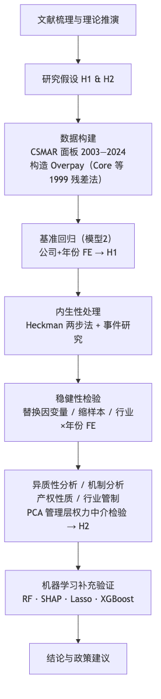
图1-1 技术路线图
财政补贴主要指政府围绕特定政策目标向企业提供的资金支持，可以表现为技术创新、节能减排等专项补助，也可体现为税收返还、政策性贷款贴息、研发费用加计扣除等形式。按现行会计准则，政府补助分为“与资产相关”和“与收益相关”两类：“与资产相关”的补助通过递延收益逐期摊销进入利润，“与收益相关”的补助在满足确认条件后一次性或分期计入当期损益。补贴的到账时间、规模和附带约束因而会直接改变企业的资源配置方式和财务报表表现。此外，我国财政补贴存在使用约束弱、事后监督不足特征，很容易成为管理层权力寻租渠道。
从经济属性看，财政补贴并不是企业通过市场竞争形成的经营收入，而是带有明确政策来源的外部资源输入。对上市公司而言，它既会改变利润表表现，也会重塑管理层调度资源的空间。在我国制度环境下，补贴使用约束并不总是充分，事后跟踪也存在不足，因此这类资金更容易成为管理层寻租的落点。基于这一点，文中把财政补贴放在“补贴—治理—薪酬”链条的起点。不过，这种外部资源属性并不意味着补贴天然具有准自然实验性质，全文仍将其视为需要谨慎识别的解释变量。
在具体度量上，本文同时保留两类补贴口径。描述性统计和对照考察中使用企业年度政府补助金额经零值保留后的对数形式，即，以平滑右偏分布并保留零补助公司年度观测；基准回归则进一步聚焦于已获得补贴的公司年度，使用仅对正补助取自然对数的强度口径。这样的安排有助于把“是否获得补贴”和“获得补贴后的强弱差异”区分开来。从时间演变来看，上市公司获得补贴的方式和规模都发生了明显变化。加入世界贸易组织后，政府补贴逐渐从早期更偏全面覆盖的价格补贴，转向技术创新、节能环保和战略性新兴产业导向更强的选择性支持。2007年《企业会计准则第16号——政府补助》的发布，又提高了补贴数据的可比性与可识别性，为后续大样本检验创造了条件。补贴项目越细、规模越大，申报和使用过程中的信息不对称也往往越突出，主管部门很难长期跟踪每笔补贴的真实去向，而企业高管在项目论证和资源配置中通常掌握更多内部信息。
高管超额薪酬并非泛指“薪酬高”，是指控制企业规模、盈利表现、资产结构、区域与行业等客观因素后仍高出正常基准的那部分报酬。这一概念的关键在于先回答一个基础疑问：治理约束相对有效时，高管通常应获得怎样的回报？基准建立后，实际薪酬相对基准的偏离才能被识别为异常成分。若某家公司高管薪酬持续高于基准，可将该偏离理解为代理成本的一种表现——管理层借助信息优势或组织地位额外取得的收益。
具体处理上沿用Core等（1999）[5]的期望薪酬结构，先利用公司特征变量估计“正常薪酬基准”，再将模型残差作为超额薪酬。这一做法的优势是，企业规模、经营绩效等常规因素已在期望模型中被吸收，残差因而更接近本文真正关心的异常部分。数值上它对应实际薪酬相对拟合基准的偏离，实证操作中直接使用残差序列，不再额外做“实际值减预测值”的二次计算。由于该变量本身就是回归残差，样本均值理论上接近0，因此不再对其二次缩尾以保留原有统计含义。
与直接使用薪酬数额、薪酬差距或薪酬—绩效敏感性等指标相比，残差法的优势在于先给出相对客观的“应得薪酬”标尺，再讨论实际薪酬偏离该标尺的程度。直接使用薪酬总额操作更简洁，但难以区分哪些差异原本就应由规模、行业和经营绩效决定。高管与员工薪酬之比能反映内部公平，但仍难将“应得”与“超得”分开。薪酬—绩效敏感性更侧重激励契约强弱，不直接回答契约是否已被管理层扭曲。综合考虑，本文最终以期望薪酬残差作为超额薪酬的经验代理变量。
管理层权力（Managerial Power）指高管对企业关键决策施加实际改变的空间，尤其体现在薪酬契约、资源配置和战略议程上的控制程度。管理层权力不是单一维度变量，是一个需要由多项治理特征共同逼近的潜在构念。相关文献通常从三个方向刻画这一概念：一是由正式职位和董事会结构体现的结构性权力，例如两职合一、内部董事比例和董事会规模。二是由高管持股体现的所有权权力。三是由任期、声望和组织关系积累形成的关系性权力。
在中国上市公司环境下，管理层权力的形成逻辑往往更复杂。国有企业高管的权力基础，常常兼带行政授权和市场地位两层属性；在民营企业中，大股东和实际控制人的意志又会深度塑造高管的实际空间。由此，同样归入“管理层权力”这一概念之下，不同所有制企业里的生成路径并不完全一致。结合数据可得性与实证可操作性，本文以Dual、Boardsize、Insider和Mgshder四个底层指标构造综合指数，在有限数据条件下尽量保留结构性权力和所有权权力两条主要来源。
既有讨论显示，中国公司治理结构中党委、董事会和管理层之间的权力边界并不总是清晰，国有企业尤其如此。党政体系中的关系网络、与上级主管部门的信任程度等真正牵动高管地位的因素，在公开年报中几乎无法直接量化。把“管理层权力”放到中国上市公司语境下理解，其复杂性明显高于西方主流文献的标准设定。本文的处理方式保留了可操作性，部分非正式权力渠道仍容易被低估，后文区分国有与民营企业的异质性检验也有这层考虑。
管理者权力理论（Managerial Power Theory）为补贴—薪酬关系提供了一个更贴近现实的解释起点。Bebchuk 和 Fried（2003）[2]提出该理论，本质上是在质疑“最优契约说”对董事会理性和中立性的乐观假定。若完全按最优契约理解，高管薪酬应主要反映边际贡献；但在管理者权力视角下，董事会、薪酬委员会和经理人市场未必足够强，高管本人常会直接参与薪酬合同形成，薪酬安排因而更容易受权力格局左右。Finkelstein（1992）[6]把高管权力细分为结构性、所有权、专家性和声望性四类，为经验操作提供了清楚参照。本文据此选用两职合一、董事会规模、内部董事比例和高管持股四项指标来描绘管理层权力。
顺着这条思路往下看，高管影响薪酬安排并不只靠单一渠道。它可以体现在董事会成员关系和表决氛围的塑造，也可以体现在把薪酬结构做得更复杂、让外部不易迅速辨认，还可以体现在对披露节奏和披露内容的把握。Core等（1999）[5]把治理结构、较高薪酬和较差绩效放进同一经验框架，后来不少文献都借此讨论薪酬失衡。放到中国上市公司情境里，这套视角的现实意味更强：国有企业里党委会、董事会和经理层的边界未必完全清晰，民营企业里实控人与高管关系紧密、独立董事制衡不足也并不少见。形式上的治理安排，未必真能压住高管在薪酬决定中的影响力。
这一理论的关键启发在于：财政补贴带来的不止是额外资金，它还会改变高管在企业内部的相对地位。补贴的申请、沟通、协调和使用离不开管理层深度参与，高管在资源配置中的位置因而更加突出。外部资源扩张与内部权力强化一并发生时，补贴便容易转化为薪酬谈判中的额外筹码。据此，本文不直接用薪酬规模讨论边界，而转向期望薪酬残差，尽量将“补贴改善业绩后合理抬高薪酬”与“补贴扩大权力后带来异常收益”区分开。Bu等（2019）[4]和步丹璐、王晓艳（2014）[16]在治理较弱企业中观察到更强的正向关系，与这一判断一致。
代理理论（Agency Theory）提供了一条偏“资源流向”的解释线索。Jensen和Meckling（1976）[8]将股东与管理层的关系概括为委托—代理安排：股东让渡经营权，却无法完整观察管理层的努力、动机和资源使用方式。监督不足时，管理层会将企业资源调向更符合自身利益的位置，道德风险和代理成本由此产生。薪酬场景中，显性表现是高管通过调整绩效基准或薪酬结构获得高于边际贡献的回报；隐蔽形式包括在职消费、差旅安排和其他灰色收益；跨期扭曲则表现为把短期业绩做得更好看、代价留给后续年份。预算软约束较强的企业中这类现象更容易出现。
财政补贴进入企业后，代理议题容易被放大，因为补贴会冲淡“真实努力”和“外部资源”的边界。补贴常常会直接改善账面利润，如果薪酬契约没有把这部分政策性收益从绩效考核中剥离，高管就会在努力并未同步增加的情况下拿到更高报酬。已有文献在财务困境企业中观察到补贴增加与超额薪酬上升一并出现，这与代理理论强调的资源侵占逻辑一致。后文进一步区分不同产权类型。国有企业面对国资监管、审计约束和薪酬管制，私营企业则更多依赖大股东约束和市场纪律，监督结构并不相同，补贴最终会不会外溢到薪酬端，自然也不宜预设为同一种强度。
中国制度环境下，委托—代理链条常常是多层嵌套的。关系展开后通常涉及公众、财政部门或国资监管机构、董事会以及高管团队等多个层级，每一层都掌握着不完整的信息。财政补贴本来是一种政策资源，但一旦进入企业，高管对其具体申报、使用和绩效完成情况往往了解得更多，上层监督者未必能及时、完整地把握真实情况。由此便会出现一个很现实的悖论：补贴越多，政策资源与经营努力越难分开，薪酬契约识别“谁创造了价值”的精度反而会下降。陈冬华、陈信元和万华林（2005）[17]关于名义限薪下隐性收益上升的证据，正好说明显性约束并不能自动消除代理空间。
代理理论里还有一个特别重要的概念，即薪酬—绩效敏感性（Pay-Performance Sensitivity）。理想的契约应当对真实经营绩效敏感，而不应对外部运气收益过度敏感。财政补贴恰恰容易打乱这点，因为它会直接抬高利润表现。若补贴改善账面收益后被机械纳入绩效薪酬基数，高管就会在没有额外努力的情况下同步受益。卢锐、柳建华和许宁（2011）[20]关于内控质量越高、薪酬—绩效敏感性越强的证据，也支持了这种理解。方军雄（2009）[18]进一步提示我国上市公司高管薪酬存在显著粘性，即业绩下降时薪酬调整幅度不如业绩上升时明显，这说明薪酬契约对绩效的约束本身就存在不对称性，财政补贴带来的账面收益改善更容易被纳入薪酬上调范围。本文采用期望薪酬残差（Overpay）而非薪酬数额，目的是先剥离“补贴带来正常绩效改善”这一层，再观察异常收益部分是否仍然存在。
信号传递理论（Signaling Theory）补充了外部信息环境这一层。Spence（1973）[14]讨论的核心疑问是：在信息不对称条件下，掌握更多信息的一方会主动释放可观察信号，以引导外部对其质量的判断。后来这一路线常见于企业财务和资本市场课题，信息披露质量、股利政策和资本结构都可以放到类似逻辑里理解。
如果把信号传递理论放到补贴与薪酬的关系里看，它至少能说明三件事。企业会主动向政府发出“值得支持”的信号，在文本披露中强化创新、环保和政策契合度表达，以提高获取补贴的概率；已有文献也提示，这类表述有时与补贴获取联系更紧，却未必与真实绩效一一对应。补贴本身还会向市场释放背书信号，投资者、合作伙伴乃至经理人市场都容易把它解读为政府对企业质量的认可。信息复杂化也会成为管理层的策略选择：披露越复杂，外部监督越难迅速辨认薪酬安排中的异常部分。
再往前推一步，还会看到一个更现实的难题：政府当然希望把补贴投向真正高质量的企业，但在信息不对称环境下，更会组织材料、调整表达和发送信号的管理团队，往往能够以较低成本塑造“高质量企业”的外在形象。若如此，补贴流向就未必完全由真实效率决定，而部分取决于谁更擅长生产和管理这些信号。这一点值得注意，因为信号生产力度往往与信息控制权相伴而生，而信息控制权又会回到薪酬谈判过程。李哲、王文翰和王遥（2022）[19]、王克敏等（2018）[27]分别从补贴获取和薪酬掩护两个端口提供了经验支持，也使这条逻辑链更具可讨论性。
管理者权力理论、代理理论和信号传递理论是理解补贴与薪酬关系的三个重要理论视角。管理者权力理论回答的是“补贴在什么条件下会被管理层截留”，代理理论回答的是“这种截留依托什么内部安排发生”，信号传递理论则补充了“外部信息环境为什么会放大或压缩这一过程”。
这三个理论视角可以相互补充，但它们存在一些内在张力。管理者权力理论常以股权相对分散为背景，而中国企业里真正重要的制衡来源很多时候是大股东或实际控制人。代理理论在国有企业里往往会面对多层委托链条，监督责任并不只发生在董事会一层。信号传递理论则默认高质量与低质量主体在发送信号上的成本差异较为稳定，但在披露监管尚不充分、地方政策竞争较强的市场环境中，这一前提未必总能成立。
如果把中国制度环境纳入进来，上述三套理论就需要再做一层本土化理解。中国上市公司获得的财政补贴并非一般意义上的现金流入，它往往嵌在地方政府竞争、产业政策导向、国资监管层级差异和信息透明度不均衡这些条件里。补贴兼有资源输入和制度安排的双重属性，改变的是利润表数字，也会重塑高管与政府、董事会以及外部投资者之间的相对关系。
在这一情境下，至少有三点值得特别注意。补贴分配通常带有较强的政策导向和选择性，高管在申报、沟通和协调中的角色往往会被放大。补贴到账后的约束和追踪在不同地区和所有制企业之间并不均衡，一些企业面对的外部监督明显更弱。加之地方政府之间存在持续的财政竞争，各地在招商引资过程中都会主动使用补贴工具，补贴分配受中央政策意图、地方财政余裕和招商策略共同牵动。
基准工具变量采用“同城市同年度其他公司平均补助”，制度逻辑就来自这种地方财政政策的共同波动；后文补充的同行业留一法和精炼双工具变量，则进一步借助行业政策倾向和省市层面的留一法波动观察补贴强度识别是否稳定。但如后文第四章所述，这些工具变量在当前基准样本中一阶段整体偏弱，因此仅作为后台诊断而不承担正文主识别功能。
考虑到新的基准回归聚焦于已获补贴样本内部的强度差异，文中更强调两类与新口径直接相关的补充识别做法：一是用 Heckman 两步法处理“谁更容易进入正补助样本”的选择偏差。二是通过事件动态检验和行业×年份固定效应设定，观察补贴强度抬升前是否已存在明显的预趋势，并尽量压缩时变行业冲击。传统留一法工具变量仅作为后台诊断，若一阶段整体偏弱、二阶段方向不稳，则不作为正文识别证据。
基于这一背景，“补贴带来资源扩张”与“补贴扩大管理层可支配空间”往往一并出现，补贴据此不宜简单看作财务变量，而应视为牵动资源配置、权力结构和外部信号的复合性冲击。2015年以来国有企业薪酬制度改革又进一步加深了这种差异。中央出台的限薪令直接限制了央企和地方国企主要负责人的薪酬上限，并要求薪酬与企业绩效、职工收入挂钩。由此，即便国有企业获得较多补贴，其薪酬空间也会受到更强的行政约束；私营企业的薪酬安排则更多受市场机制和大股东意志支配，行政限薪的外部硬约束相对较弱。产权性质和行业监管强度因而成为后文重点讨论的异质性维度。
结合上述制度情境，也就不难理解文中为何同时采用固定效应、中介路径检验和机器学习补充验证。固定效应与滞后设定更适合区分“企业原本就存在的差异”和“补贴变动之后发生的变化”；中介检验侧重观察权力渠道是否留有传导线索；机器学习补充部分则回到基准回归样本，看财政补贴在多变量竞争下是否仍保留信息含量，并检视其局部走势是否与 OLS 大体一致。说到底，第二章的理论推演想回答的是两个更基础的疑问：补贴为何会与超额薪酬上升相伴，以及这一联系为什么会在不同企业间呈现不同强度。
以上讨论可以收束为一个分层安排：代理理论解释补贴为何会演化为管理层收益，管理者权力理论说明这种转化依赖什么内部结构，信号传递理论则补足外部信息环境怎样改变传导强弱。把三者合起来看，财政补贴就超出了单纯的资源变量含义，它会通过组织地位、声誉背书和披露安排等渠道间接改写薪酬谈判的格局。后文控制变量的安排、中介检验的设计以及异质性维度的选择，基本都来自这一套推演。
基于上述理论梳理，提出以下两个核心理论假设：
假设H1（主效应）：在已获得财政补贴的企业内部，补贴强度与高管超额薪酬预期存在正向联系。在信息不对称和薪酬约束不足的条件下，财政补贴扩大了企业可支配资源规模；如果薪酬治理机制无法对管理层的资源提取行为形成有效约束，这类外部资源便易于与更高的高管超额薪酬相伴随。H1主要建立在代理理论的资源侵占逻辑之上：补贴进入企业账面之后，若激励契约没有把这部分“非经营性收益”从绩效薪酬基数中剔除，高管有条件在未作出相应经营努力的情况下同步受益；同时，资源扩张也会放松董事会在薪酬谈判中的支付约束。基于此，H1预期在已获补贴企业内部，补贴强度与高管超额薪酬之间存在正向联系，并在较严格的控制设定下仍可被观察。
假设H2（中介效应）：本文检验管理层权力是否构成财政补贴与高管超额薪酬之间的中介路径。财政补贴的获取和使用往往强化高管在资源配置中的核心地位，并进一步提升其在薪酬谈判中的议价条件；若控制管理层权力后，补贴对超额薪酬的直接效应收窄，且管理层权力的系数显著为正，才可将其视为存在间接传导的经验线索。H2主要来自管理者权力理论：补贴获取过程中高管的深度介入，往往会带来正式权力和非正式影响力的同步上升，这种权力扩张随后再进入薪酬决定过程。
本章的经验设计围绕一个收得很窄的命题展开：已经拿到财政补贴的上市公司之间，补贴多少是否对应更高的高管超额薪酬。这一设定刻意把“有没有补贴”与“拿到后多少”分开。既有文献常在全样本里讨论补贴平均效应，零补助企业和正补助企业一起进入回归，结论里容易把获得边际和强度边际揉在一起。本文因此只保留上一年已获正补助的公司年度，让估计对象落在已获补贴企业内部的强度差异上，而不是全部上市公司的平均补贴效应。围绕这一核心命题，后面还会接着看两件事：管理层权力会不会承接补贴强度到超额薪酬的传导（H2），以及产权性质、行业管制强度不同，关联格局会不会随之变化。
整套经验检验其实沿着两条线往前走。第一条线看财政补贴与高管超额薪酬之间是否存在稳定的条件对应；第二条线看这层对应是否有一部分会通过管理层权力传过去。产权性质和行业管制强度则被当作制度情境，用来观察这一关系在不同环境里会不会换一种样子。
企业拿到财政补贴后，最先发生的变化，是可支配资源和账面利润一起被改写，薪酬安排所面对的资源约束随之松动。补贴从申报到落地再到使用，通常又需要高管深度介入，这会进一步抬高其在组织内部的议程设置权和资源调度权。
顺着这一判断，后文的实证安排按四步展开。先用基准回归确认主联系，再看稳健性检验下这一联系会不会明显摇摆；随后加入选择偏差校正、中介拆解和异质性考察，把识别边界、传导路径与制度差异交代清楚；最后再用机器学习部分复核财政补贴的变量地位、方向一致性和局部走势。不同工具分别回答不同命题，而不是简单叠加在一起。
本文以2003—2024年沪深A股上市公司为总体，所需数据均来自国泰安（CSMAR）数据库，包括政府补助数据、高管薪酬数据、公司财务数据（资产负债表、利润表）、公司治理数据（董事会构成、股权结构）以及企业性质和地区分类信息。样本清理的思路是先保证可比性，再处理极端值和缺失疑问。
金融行业被首先剔除，因为其资产负债结构和监管氛围与一般实业企业差异过大，直接并入会让薪酬与补贴的比较基准失真。样本期内被 ST、*ST、S*ST、SST、PT 或处于退市整理期的公司也不保留；由于仓库中未能获得更权威的独立 ST 状态维表，实际操作按合并后简称字段中的标签进行识别和剔除，目的是排除财务异常、退市风险和极端经营状态的样本，尽量保证不同公司之间薪酬与补贴比较基准的可比性。
政府补助数据先按披露口径处理。若公司年度没有披露补助项目，当年补助金额记为0，避免零补贴观测在描述统计和第一阶段变量构造时被自动丢掉；少量负值观测在构造 时也统一按0处理。进入基准回归时，不再把“没拿补贴”和“拿了补贴但多少不同”的公司年度放在一起估计，而是只留下上一年确实存在正补助的公司年度，并用滞后一期正补助对数表示补贴强度。这样一来，第二阶段只回答一个问题：已获补贴企业内部的补贴强度上升后，超额薪酬是否也会随之抬升。Zone 的识别先依据公司注册地址，信息不足时再结合办公地址和城市字段确定省级区域，并按“东部=0、中西部=1”编码，以减少城市名单不完整带来的系统错分。之后删除核心变量缺失严重的观测，对主要连续变量（Overpay除外）统一在1%和99%分位数处做Winsorize缩尾；原始薪酬数据继续沿用CSMAR数据库既有缩尾口径。
样本筛选后的数量变化如下。原始公司—年度观测为70,559条，剔除金融行业后剩69,142条，再剔除特殊处理样本后剩63,011条；关键变量齐全的样本为52,980条，其中满足基准薪酬模型完整案例要求的有52,805条。若再要求管理层权力底层指标齐备，可用于构造 Power 的样本为50,171条。进入基准回归阶段后，进一步保留“上一年补助金额大于0”且滞后一期补贴强度可得的公司年度，模型2样本为43,417条；机器学习补充验证沿用同一变量口径，因此样本数不变；中介效应部分还要求 Overpay、Power 与滞后一期正补助同时完整，统一样本最终收窄到41,186条。
时间窗口的设定也有现实考虑。样本从2003年起步，一方面是加入世贸组织后上市公司信息披露逐步规范，CSMAR 在2003年前后的数据完整性和可比性明显好转；另一方面，政府补助作为独立披露科目的规范要求也在这一阶段渐次清晰，若把更早年份混进来，口径差异会带来额外误差。样本截止到2024年，既尽量利用最新可得数据，也给滞后变量留下足够年份。剔除金融行业后，样本覆盖制造业、信息技术、批发零售、房地产、交通运输等17个行业门类，整体行业结构与沪深A股分布大体一致。
不同实证模块所用样本并不完全一样，这里单独把口径摊开。构造 Overpay 的基准薪酬模型用到 52,805 条观测。模型2再加上“上一年获得正补助”的限制后，样本缩减为 43,417 条。机器学习补充部分直接沿用这组基准回归样本，只放入 lnSubsidy_pos_l1、Roa、Lever 和 Top1 四个输入变量，因此样本数量保持在 43,417 条。中介检验另外要求管理层权力综合指标 Power（PCA）完整，统一样本便进一步缩小到 41,186 条。这样处理后，基准回归样本、机器学习样本和中介样本的边界就不会混在一起。
高管超额薪酬以基准薪酬模型的回归残差直接度量。具体以高管前三名薪酬总额的对数 lnSalary 为被解释变量，把企业规模 lnSale、盈利表现 Roa、无形资产占比 IA 和地区虚拟变量 Zone 作为核心解释变量，并控制行业和年份固定效应。对应模型在第三章模型设定部分正式给出。
基准薪酬模型的残差项 直接定义为 。使用高管前三名薪酬总额而非单个CEO薪酬，主要是为了降低个别年份单一职位数据缺失或异常的带动。此外，中国上市公司重大决策往往由高管团队共同完成，团队层面的薪酬安排更能反映企业的整体激励取向。 表示该企业高管获得了高于基准的薪酬， 则表示其薪酬低于基准，这一情况在部分受薪酬管制约束的国有企业中并不少见。
3.3.2 核心解释变量：财政补贴强度（lnSubsidy）
为区分“是否获得补贴”和“获得补贴后的强弱差异”，本文同时保留两类补贴度量。第一类是描述性统计和对照检验中使用的全样本口径：
(3-1)
第二类是基准回归使用的强度口径，仅在补助金额大于0时取自然对数：
(3-2)
其中，第二阶段基准回归实际使用的是滞后一期变量 。这样处理的考虑有两点： 适合保留零补助公司年度，用于描述整体样本与对照口径；若核心疑问聚焦于“已经拿到补贴之后，拿得更多是否伴随更高的超额薪酬”，则更自然的做法是把基准回归限制在上一年已获得补贴的公司年度，并直接比较补贴强弱差异。也即，全文主线更关注补贴的强度边际，而不是全体公司平均层面上的混合效应。
控制变量分成两个阶段来设定，原因在于两阶段模型各自承担的任务并不一样。第一阶段的目标，是尽量准确地估计“合理薪酬”或“基准薪酬”，控制项要尽量覆盖那些决定正常薪酬数额的公司特征，包括企业规模（）、盈利表现（Roa）、无形资产占比（IA）和地区虚拟变量（Zone），并进一步控制行业和年份效应，把规模、业绩、资产结构以及地区薪酬基准这些常规差异尽量吸收进基准薪酬模型。
第二阶段的关注点转向财政补贴与“超额薪酬”之间的联系，因此控制项收缩为更直接关系到薪酬契约合理性、监督强度和寻租空间的变量，即盈利表现（Roa）、财务杠杆（Lever）和第一大股东持股比例（Top1），同时统一纳入公司和年份固定效应。这样安排的逻辑比较直接：财务杠杆对应债务约束，大股东持股比例代表外部监督条件，公司固定效应和年份固定效应则分别吸收稳定个体差异与共同宏观冲击。无形资产占比对应企业对知识资本的依赖程度；Zone 依据注册地址优先、办公地址补充的规则识别企业所属东中西部地区，但由于它在公司层面基本稳定，在第二阶段会被公司固定效应吸收，因此不再单独进入方程。所以，两阶段控制变量的差异并不意味着模型设定前后不一致，而是分别服务于“尽量拟合合理薪酬基准”和“在固定效应设定下观察补贴强度与超额薪酬的条件相关”这两个不同经验任务。主要变量定义汇总见表3-1。
表3-1 主要变量定义
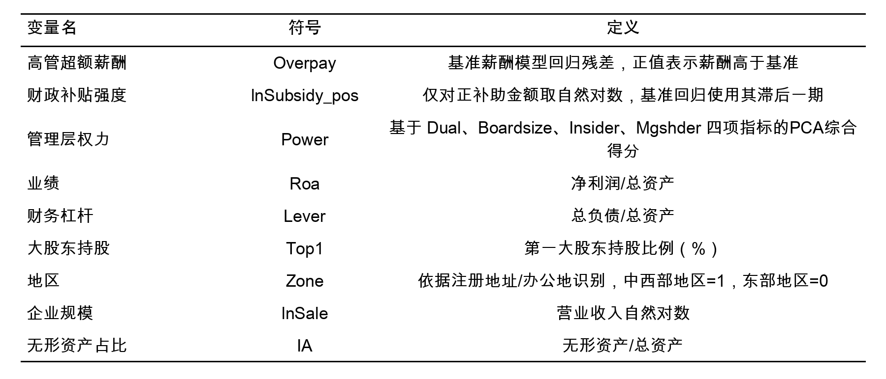
管理层权力变量 Power 主要作为中介变量使用。正文将其定义为基于 Dual、Boardsize、Insider 和 Mgshder 四项治理指标构造的 PCA 综合得分，用于刻画高管在正式职位、董事会结构与所有权层面的综合控制力。有关 Power 的具体构成过程以及 PCA 诊断信息，统一放在第四章中介效应讨论部分展开。
这里不把 Power 直接纳入基准回归，是为了先保持主模型的变量口径简洁，再在传导路径部分单独检验权力渠道。这样安排也便于区分“补贴强度本身的条件相关”和“管理层权力参与的间接传导”。
模型设定分为两个阶段，如3.3所述，第一阶段先估计企业在既有规模、业绩和地区条件下的基准薪酬数值，以便把”正常薪酬”与”异常偏离”区分开来。第二阶段再以超额薪酬为被解释变量，考察补贴强度与异常薪酬之间的条件相关。两阶段所用控制变量不同，核心原因在于两阶段的任务并不一样。第一阶段的目标是尽量准确地估计”合理薪酬”或”基准薪酬”，因此控制项要尽量覆盖那些决定正常薪酬规模的公司特征。第二阶段的关注点转向财政补贴与”超额薪酬”之间的联系，因此控制项收缩为更直接关系到薪酬契约合理性、监督强度和寻租空间的变量。
基准薪酬模型直接沿用Core等（1999）[5]的基本思路：
(3-3)
其中， 表示第 家公司第 年高管前三名薪酬总额的对数值， 为随机扰动项。残差序列 直接作为超额薪酬的代理变量，即 ，正值表示实际薪酬高于基准状态，负值则相反。
该模型的任务仅是生成超额薪酬变量，不直接回答财政补贴命题。因此，式（3-3）更强调对正常薪酬决定因素的覆盖，后续模型才在这一残差口径上讨论补贴强度差异。
基准回归阶段以超额薪酬（Overpay）为被解释变量，将滞后一期财政补贴强度（）作为核心解释变量，并加入企业层面控制变量、公司固定效应和年份固定效应：
(3-4)
这里的 分别表示公司固定效应， 分别表示年份固定效应。需要注意的是，式（3-4）并非在全部公司年度上估计，而只保留“上一年补助金额大于0”的公司年度，因此最关键的是 的方向、大小及统计显著性：若 并达到显著水平，就意味着在控制公司稳定差异和年度共同冲击后，已获补贴企业内部的补贴强度差异仍与更高的超额薪酬相伴。核心解释变量取滞后一期补助，目的是尽量固定“补贴在前、薪酬在后”的时间顺序，减轻同期反向因果的干扰。与第一阶段相比，此处控制变量更集中在盈利表现、债务约束和外部监督三类会直接牵动薪酬契约与寻租空间的因素。另需说明，式（3-3）利用行业与年份固定效应构造跨企业的薪酬基准，式（3-4）则借公司与年份固定效应识别同一企业内部随时间变化的补贴强度与超额薪酬联系；Overpay 残差中保留的公司层面稳定异质性，会在式（3-4）的公司固定效应中进一步被吸收，因此两阶段设定并不冲突。
考虑到基准回归聚焦于“已获补贴企业内部的强度差异”，这一设定面临两类更直接的识别挑战。第一类是样本选择：只有进入正补助样本的公司年度才会出现在基准回归里，因此更容易拿到补贴的企业也往往更容易支付较高薪酬。第二类是时变遗漏变量：即使都已进入正补助样本，不同企业的补贴强度变化仍会与行业景气、政府扶持倾向或高管资源协调空间同步波动。
与传统工具变量相比，Heckman 两步法更直接对应本文新的基准样本设计。第一步以 lnSubsidy_pos_l1 是否可观测构造选择方程，检验哪些公司年度更容易进入“已获补贴样本”；第二步将逆米尔斯比率纳入公司和年份固定效应回归，以判断基准回归中的正向系数是否主要由样本选择偏差驱动。
传统留一法工具变量仍作为诊断项统一重跑，包括“同城同年其他企业平均补助”“同行业同年其他企业平均补助”以及“同行业同年排除本省平均补助 + 同省同行业同年排除本市平均补助”等 FE-2SLS 规格。但这部分不再承担正文主识别功能：若一阶段整体偏弱、二阶段方向明显不稳，仅据此判断当前结论对外生识别仍较敏感，而不将其写入正文主表。因此，正文更重视与新基准样本直接对应的选择偏差校正、事件动态检验和更严格固定效应设定。
此外，还补充实施两类辅助诊断。第一类是事件动态检验：以“上一年补助金额首次进入正补助样本上四分位区间”作为高补贴事件，考察事件发生前后超额薪酬的动态变化，并重点检验事件前是否已存在可辨识的预趋势。第二类是更严格的“公司固定效应 + 行业×年份固定效应”基准回归设定，用于检验主估计是否只是来自行业年度景气波动。上述检验都用于刻画识别边界和动态伴随关系，不被解释为严格含义上的因果估计。
在完成基准回归与选择偏差校正之后，再按照Baron和Kenny（1986）[1]的经典中介梳理思路，检验财政补贴是否会经由管理层权力这一渠道带动超额薪酬。由于新的基准回归总效应已经显著，但中介效应仍需结合路径显著性、Bootstrap 区间和测度局限综合判断，后文更强调“路径线索”和审慎解释，而不将其解释为严格的经典中介识别。正文采用 PCA 口径的管理层权力指标 Power。中介检验模型依次编号为模型3至模型5，对应的三步回归如下：
第一步（估计总效应 ，对应模型3）：
(3-5)
第二步（估计路径 ，补贴与权力的联系，对应模型4）：
(3-6)
第三步（同时纳入补贴和权力，估计控制 Power 后的补贴系数 与路径 ，对应模型5）：
(3-7)
其中，模型3对应统一样本上的总效应检验，模型4对应路径 ，模型5另外给出路径 与控制 Power 后的直接效应 ； 为控制变量向量。间接效应记为 ，Sobel 检验统计量为：
(3-8)
其中 和 分别是路径系数 与 的标准误。鉴于 Power 仅为经验性综合测度，正文判断更看重路径 、路径 、直接效应 以及 Bootstrap 输出的组合证据，而不单凭单一路径系数作结论性判断。
表3-2 本文计量模型汇总
模型编号 | 模型名称 | 对应公式 | 主要用途 |
模型1 | 基准薪酬模型 | 式（3-3） | 估计“合理薪酬”基准，残差直接定义为超额薪酬 Overpay |
模型2 | 基准回归模型 | 式（3-4） | 检验H1：已获补贴企业内补贴强度与 Overpay 的正向关联 |
模型3 | 中介检验第一步（总效应） | 式（3-5） | 估计补贴强度对 Overpay 的总效应 c（H2 检验起点） |
模型4 | 中介检验第二步（路径 a） | 式（3-6） | 估计补贴强度对管理层权力 Power 的效应（路径 a） |
模型5 | 中介检验第三步（路径 b + 直接效应） | 式（3-7） | 同时纳入补贴与 Power，估计路径 b 及直接效应 c′ |
机器学习部分围绕第四章的基准回归开展补充验证。为保持与第二阶段基准回归模型（模型2，式（3-4））完全一致，本节仅纳入滞后一期正补助对数（lnSubsidy_pos_l1）、业绩（Roa）、财务杠杆（Lever）和第一大股东持股比例（Top1）四个变量，不再纳入管理层权力综合指标，也不额外加入地区变量、企业属性或其他扩展特征。说明一下，第一阶段基准薪酬模型（模型1，式（3-3））使用的是 lnSale、Roa、IA、Zone 等变量来估计”合理薪酬基准”，其任务是构造被解释变量 Overpay，与机器学习部分的验证目标不同；机器学习部分对应的是模型2中用于检验补贴强度效应的解释变量口径，两阶段变量设定的差异源于各自承担的拆解任务不同，并非前后矛盾。这样安排后，机器学习回答四个命题：一是财政补贴强度在树模型中的全局预测贡献是否仍位于前列。二是基于 SHAP 的边际贡献排序是否与随机森林的重要性结论一致。三是在正则化筛选条件下财政补贴变量是否会被压缩为0，且方向是否仍与 OLS 基准回归一致。四是在更灵活的树模型中，财政补贴的局部趋势是否仍表现为总体上升。
机器学习部分直接沿用基准回归的 43,417 个公司年度观测。样本按公司分组后，通过 GroupShuffleSplit 按 8:2 划分为建模样本（34,818 条）和保留样本（8,599 条），确保同一公司的全部年度观测只出现在一侧，避免跨期观测同时进入不同样本而高估验证效果。输入特征共 4 个，分别是滞后一期正补助对数（lnSubsidy_pos_l1）、业绩（Roa）、财务杠杆（Lever）和第一大股东持股比例（Top1）。被解释变量仍沿用第四章基准回归中的连续型超额薪酬（Overpay），以保证机器学习部分与基准回归面对的是同一对象。
在技术处理上，所有连续型特征在进入 Lasso 前都通过 StandardScaler 做零均值、单位方差标准化；树模型对特征尺度不敏感，不做这个处理。Lasso 的惩罚参数选择、随机森林和 XGBoost 的调参与稳定性检验，均按公司分组实施 GroupKFold，以避免同一公司的不同年份样本同时进入训练折和验证折。这里的交叉验证主要用于控制过拟合和稳定模型设定；用于正文判断的是随机森林的特征重要性、SHAP 的平均绝对边际贡献、Lasso 对财政补贴变量的保留情况及系数方向，以及 XGBoost 的重要性排序和部分依赖趋势。
随机森林（Random Forest）是一种基于 Bagging（Bootstrap Aggregating）思想的集成学习路径。其基本过程如下：对原始训练集 进行 次有放回的自助抽样（Bootstrap），每次生成一个子样本 ；在每个子样本上训练一棵决策树 ，且在每个节点分裂时仅从随机抽取的 个候选特征中选取最优分裂变量（ 通常取 ， 为特征总数）。最终预测值为所有树的均值：
(3-9)
决策树在每个节点上依据不纯度最小化原则选择最佳分裂。对于回归场景，常用均方误差（MSE）衡量节点不纯度。对于分类场景，则使用基尼不纯度（Gini Impurity）作为分裂准则，节点 的基尼不纯度定义为：
(3-10)
其中 为节点 中第 类样本的比例。特征 的全局重要性定义为该特征在所有树的所有节点上带来的加权不纯度下降之和：
(3-11)
其中 是第 棵树的所有内部节点集合， 为节点 的分裂变量， 为该节点分裂前后的不纯度下降值。
与线性模型相比，随机森林无需预先设定变量之间的函数形式，能够自动刻画非线性关系和高阶交互。引入随机森林的目的并非把它当作新的主模型，而是观察在更灵活的函数形式下，财政补贴强度变量是否仍保有可辨识的信息含量。若 lnSubsidy_pos_l1 在随机森林的重要性排序中仍处于前列，就说明它并非只在 OLS 回归中才显得”有用”，从而能够为基准回归中的核心解释变量地位提供补充证据。
基于基尼不纯度下降得到的随机森林特征重要性，更适合回答”哪个变量对整体预测贡献更大”，但无法直接刻画变量对预测值的边际带动方向和强弱。为补足这一点，本文进一步引入 SHAP（SHapley Additive exPlanations）做法，对随机森林模型在保留样本上的预测值做解释。
SHAP 模型源于合作博弈论中的 Shapley 值。对于包含 个特征的模型 ，特征 对第 个样本预测值的 SHAP 值定义为：
(3-12)
其中 为全部特征集合， 为不包含特征 的任一子集， 表示仅使用特征子集 时的模型期望预测。公式的直觉含义是：遍历特征 加入各类子集的顺序，计算其边际贡献的加权平均。SHAP 值满足效率性（各特征 SHAP 值之和等于该样本预测值与基准预测值之差）、对称性和虚拟性等公理性质，是目前唯一满足这些性质的可加性解释做法。
在实践中，衡量特征 全局重要性的指标为样本的平均绝对 SHAP 值：
(3-13)
该值越大，说明特征 对模型预测波动的平均边际贡献越强。SHAP 在本文中主要用于复核：财政补贴变量的边际贡献排序，是否与随机森林基尼重要性的判断保持一致。
Lasso（Least Absolute Shrinkage and Selection Operator）回归属于采用 正则化的线性回归模型。其目标函数在最小二乘损失的基础上加入绝对值惩罚项：
(3-14)
其中 为惩罚参数，控制正则化强度。当 时退化为普通最小二乘（OLS）；随着 增大，部分系数会被逐步压缩至零，从而实现自动变量筛选。 惩罚的几何性质使得 Lasso 解更容易落在坐标轴上，这是它能够产生稀疏解的根本原因，也是其区别于岭回归（ 惩罚）的关键特征。
惩罚参数 的选取通过按公司分组的交叉验证（GroupKFold）确定，选择使验证集均方误差最小的 。在进入 Lasso 之前，所有连续型特征均通过 StandardScaler 做零均值、单位方差标准化，以消除量纲差异对惩罚项的改变。
本文引入 Lasso 的目的是检验 lnSubsidy_pos_l1 在正则化筛选下是否会被压缩为0，以及其系数方向是否仍与 OLS 基准回归保持一致。与普通最小二乘相比，Lasso 更适合回答”在多个候选特征同时竞争时，财政补贴变量是否仍会被保留”这一疑问，并有助于缓解多重共线性带来的不稳定估计。
XGBoost（Extreme Gradient Boosting）是一种基于 Boosting 思想的集成树模型。与随机森林的并行训练不同，XGBoost 采用前向逐步加法路径（Forward Stagewise Additive Modeling）：第 轮的模型在前 轮的累积预测基础上拟合残差，逐步改进对目标变量的刻画。设模型经过 轮更新后的预测值为：
(3-15)
其中 为所有回归树构成的函数空间。第 轮新增的树 通过最小化以下正则化目标函数来确定：
(3-16)
其中 为损失函数（回归任务通常取均方误差）， 为前 轮的累积预测， 为正则化项，定义为：
(3-17)
其中 为树的叶节点数， 为第 个叶节点的预测权重， 和 分别控制树的复杂度惩罚和叶节点权重的 正则化强度。通过对损失函数做二阶泰勒展开，XGBoost 能够高效求解每一轮的最优树结构和叶节点权重，同时正则化项有效抑制了过拟合。
与随机森林相比，XGBoost 的序贯拟合通道更适合刻画复杂非线性结构，因此这里把它作为观察财政补贴局部趋势的主要树模型。对应的解读尽量贴近基准回归的核心关切：lnSubsidy_pos_l1 在特征重要性排序中是否仍处于前列，财政补贴的部分依赖图（Partial Dependence Plot, PDP）是否呈现总体上升的局部走势。部分依赖图通过固定目标特征取值、并将其余特征保持在样本平均水平附近，刻画单一变量对应的边际模式。若这两个条件大体成立，就可以认为在更灵活的模型里，财政补贴变量依旧保留较强信息含量，其总体方向判断与 OLS 基准回归大致一致。
表4-1报告了主要变量的描述性统计信息。剔除金融行业后，样本为69,142条。再按公司简称标签剔除 ST、*ST、S*ST、SST、PT 及退市整理期样本后，剩余63,011条。关键变量完整且政府补助缺失按0处理时，可用于基础统计检验的样本为52,980条。基准薪酬模型中，企业规模变量 lnSale 与无形资产占比 IA 存在缺失。最终可用样本为52,805条。纳入管理层权力指标所需底层变量后，可用于构造 Power 的样本为50,171条。基准回归模型再要求“上一年补助金额大于0”。此时模型2样本为43,417条。中介效应检验进一步要求 Overpay、Power 与滞后一期正补助同时完整。对应的统一样本为41,186条。
表4-1 主要变量描述性统计
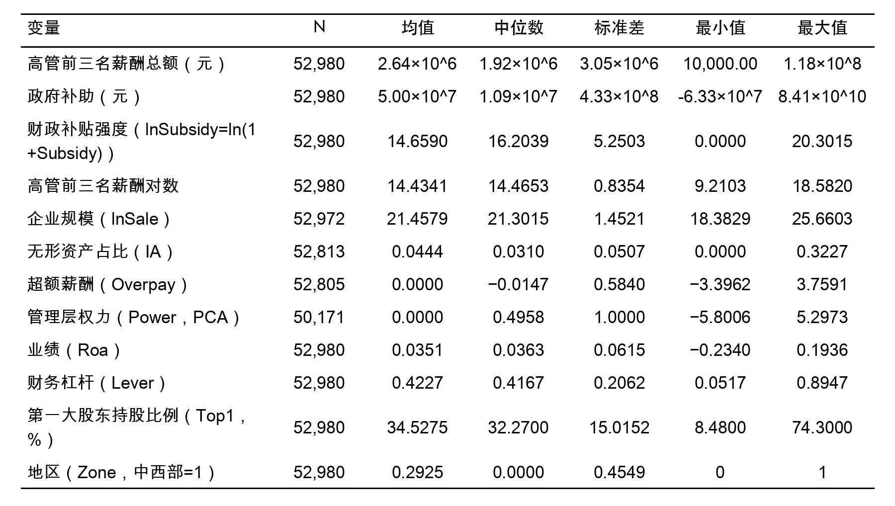
注：政府补助和高管薪酬单位为元，Overpay直接使用基准薪酬模型残差，不再开展二次缩尾；其余连续变量在1%/99%分位数处展开Winsorize缩尾处理。未披露政府补助的公司年度记为0，因此财政补贴强度变量 lnSubsidy 的最小值为0。
在实施基准回归之前，先对主要解释变量推进皮尔逊相关性讨论和方差膨胀因子（VIF）检验，以排除多重共线性干扰。
表4-2 主要变量相关系数矩阵
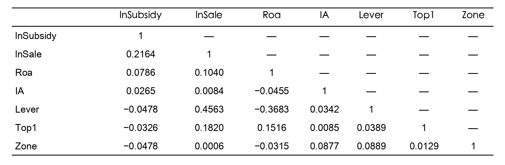
注：以下统计基于完整样本且已完成缩尾处理。对应观测数为52,805个公司年度。相关系数中绝对值最高的是企业规模变量 lnSale 与财务杠杆变量 Lever 之间的0.4563，其余变量两两相关系数整体不高，未显示出严重共线性命题。
表4-3 方差膨胀因子（VIF）检验
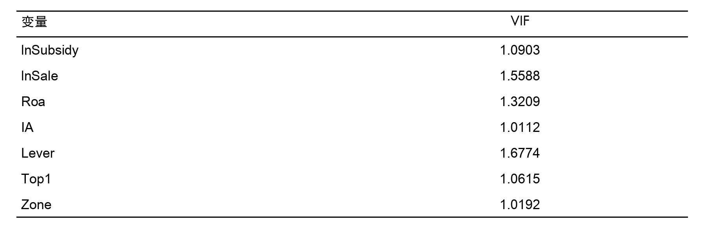
注：所有变量 VIF 均低于经验阈值10，最大值约为1.68，均值约为1.25，多重共线性风险整体较低。进一步看，基于模型1残差实施的 BP 异方差检验显著拒绝同方差原假设（p < 0.001），基于模型2口径实施的 Wooldridge 面板序列相关检验也显著（p < 0.001），意味着若继续沿用常规标准误，推断容易失真。基于这一点，后文的基准回归、选择偏差校正、中介检验、稳健性检验和异质性梳理统一采用公司层面的聚类稳健标准误。
从数据形状本身看，还有几处现象值得记下。政府补助均值约为4,997万元，而标准差高达4.33亿元，右偏依旧十分明显；原始补助金额中仍有少量负值，说明样本里确实存在补助冲减或返还。基准解释变量 lnSubsidy 的最小值为0、均值14.66、中位数16.20，反映出在把零补助公司年度纳入后，补贴分布下端被明显拉长。
超额薪酬（Overpay）的均值接近0，标准差为0.5840，说明样本内离散程度不低。第一大股东平均持股比例约34.53%，依旧呈现出我国上市公司股权较为集中的典型特征。修正地区识别规则后，Zone 的均值降至0.2925，也说明此前依据不完整城市名单的做法确实会高估中西部样本占比。管理层权力指标作为由四项治理特征提取出的经验性综合口径，用来压缩多个底层特征，由于其潜变量结构仍偏弱，因此相关证据始终只作审慎解读。
根据以上相关性和VIF估计，可以为后续回归的设定选择提供依据。各解释变量之间的两两相关系数均处于较低程度，VIF均远低于经验阈值，说明将它们同时纳入回归模型不会引发严重的多重共线性困扰。BP异方差检验和Wooldridge序列相关检验给出的显著统计证据，为后文统一采用聚类稳健标准误提供了直接依据。补贴分布的强烈右偏特征和零值集中现象，进一步支持了本文将基准回归限定在正补助样本、以对数形式刻画补贴强度的设计选择。
表4-4报告了方程（3-3）的估计结论，这是构造超额薪酬变量的基础。
表4-4 基准薪酬模型估计结果（模型1）
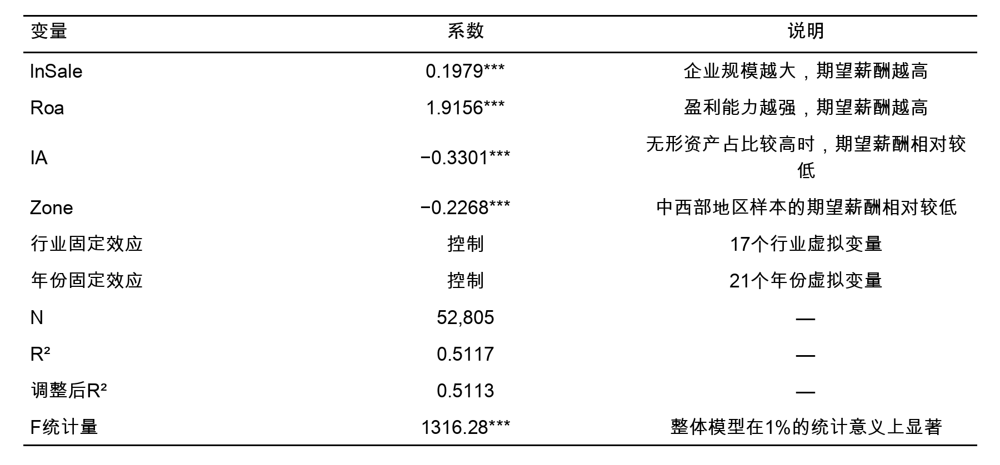
注：因变量为 （高管前三名薪酬总额的对数）。*** 表示在1%的统计层面上显著。该模型用于估计正常薪酬基准，其残差直接定义为超额薪酬 Overpay。
估计显示，企业规模（）的系数为0.1979，在1%的统计层面上显著为正，与既有薪酬—规模关系的经验观察到一致：规模更大的企业管理复杂度更高、外部经理人市场对高管技能的竞争更激烈，因而需要支付更高的市场均衡薪酬。盈利空间（Roa）的系数为1.9156，也在1%的统计层面上显著为正，符合薪酬—绩效敏感性的理论预期；无形资产占比（IA）的系数为−0.3301，显示无形资产比例较高的企业高管期望薪酬相对偏低。
地区虚拟变量（Zone）的系数为−0.2268；在 Zone=1 表示中西部、Zone=0 表示东部的编码下，说明中西部企业的期望薪酬显著低于东部企业。该模型的 为0.5117，调整后 为0.5113，F统计量为1316.28，并在1%的统计层面上显著；其 处于同类实证检验的常见区间，可作为后续提取超额薪酬残差的经验基准。
在获得超额薪酬（Overpay）变量后，基于式（3-4）实施 OLS 基准回归。与旧的全样本 口径不同，新的基准回归只保留“上一年已获得财政补贴”的公司年度，并以滞后一期正补助对数刻画补贴强度。回归证据如表4-5所示。所有估计均控制公司固定效应与年份固定效应，采用公司层面聚类稳健标准误，以缓解异方差与序列相关疑问。由于基准回归并不要求管理层权力指标完整，其样本量高于后续中介检验的统一样本。
表4-5 基准回归结果（模型2，公司与年份固定效应）
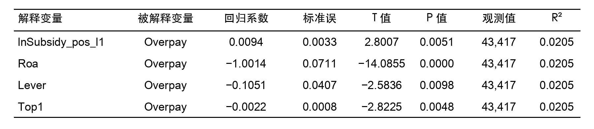
注：所有回归均控制公司固定效应与年份固定效应，并采用公司层面聚类稳健标准误。模型整体 F 统计量为62.3646（p < 0.001）。
表4-5显示，滞后一期财政补贴强度（lnSubsidy_pos_l1）的回归系数为0.0094，标准误为0.0033，T值为2.8007，P值为0.0051，在1%的统计层面上显著为正。数值表示在只比较”上一年已经拿到补贴”的公司年度时，补贴强度越高，后续超额薪酬也越高，也就是已获补贴企业内部存在显著正向的强度关联。该回归估计与H1的预期方向一致，也与代理理论所揭示的逻辑相吻合：外部政策资源的增加扩大了管理层可支配空间，如果薪酬治理逻辑未能将补贴收益从绩效考核基数中有效剔除，补贴带来的账面利润改善便容易同步转化为高管的额外报酬。
控制变量角度，三个变量的系数方向均为负且统计显著，各自对应不同的治理约束安排。业绩（Roa）系数为−1.0014，在1%层面上显著为负。需要注意，Overpay本身已经通过第一阶段模型剥离了Roa对正常薪酬的正向贡献，因此模型2中Roa的负系数反映的是：在公司固定效应结构下，盈利表现的改善与超额薪酬残差的下降相伴随。一种更直观的解释是，真实盈利改善提高了薪酬契约的可验证性，董事会更容易依据业绩支付合理报酬，从而压缩超额薪酬空间。
模型2同时要求 Overpay、滞后一期正补助和控制变量完整，因此样本量为 43,417 条，高于后面中介检验统一使用的样本。若换成经济量级来读，Overpay 的标准差为 0.5840，基准系数 0.0094 意味着 lnSubsidy_pos_l1 每增加 1 个单位，大约对应 0.0160 个标准差的残差变化。这个幅度不大，但方向稳定为正，统计上也达到常用显著性标准。考虑到财政补贴本身属于条件性政策冲击，而不是企业主营收入来源，这样的量级并不突兀：它对薪酬的边际牵动通常弱于盈利和规模等核心驱动，却仍可能在治理约束不足时留下持续的正向对应。
模型整体 F 统计量为62.36，并在1%的统计层面上显著，说明控制变量与固定效应的联合设定可以有效工作。把固定效应进一步收紧为“公司固定效应 + 行业×年份固定效应”后，lnSubsidy_pos_l1 的系数仍为0.0082（p = 0.013）。此处识别的，仍是“已获补贴企业内部，补贴强度差异是否对应超额薪酬差异”，并非全部上市公司平均意义上的补贴效应。与旧的全样本 口径相比，这种写法把获得边际与强度边际拆开了，因此更贴近本文真正讨论的边界。由此，H1在新的基准回归口径下得到支持。模型2的 R² 为0.0205，这对残差型因变量配合双向固定效应的设定并不异常；公司固定效应和年份固定效应已经吸收掉大部分个体与年度差异，回归主要解释的是组内残差波动，所以 R² 偏低本身不构成问题。
在新的基准回归设计下，内生性来源主要集中在三个方面。第一类威胁是样本选择：基准回归只保留上一年已经拿到补贴的公司年度，“谁更容易进入样本”本身就容易与公司治理状态、高管政府沟通优势和薪酬安排同时相关。第二类威胁是反向因果。某些高超额薪酬企业中的管理层，本来就更擅长政府沟通，也会在补贴和薪酬两端受益，使“高薪带来多补贴”与“多补贴带来高薪”在时间上纠缠在一起。第三类威胁是不可观测的时变因素，例如行业景气、地方扶持强度和企业内部治理变化，它们都会一并牵动补贴强度和超额薪酬。
公司固定效应可以处理企业稳定不变的不可观测因素，年份固定效应可以吸收共同宏观冲击，更严格的行业×年份固定效应能够进一步压缩行业景气共振带来的偏差；滞后一期补贴则先把时间顺序固定为“补贴在前、薪酬在后”。基于这一点，后文将重点从 Heckman 两步法与事件动态检验两个角度观察这一基准回归的识别边界；传统留一法工具变量只作为补充诊断统一重跑，不再作为正文主表证据。
据此，相关估计可理解为在多重识别设定下获得的条件相关证据。
由于基准回归只在已获补贴样本内估计，更直接的内生性来源主要来自样本选择。与传统留一法工具变量相比，Heckman 两步法更贴近当前核心疑问：第一步刻画“哪些公司年度更容易进入上一年正补助样本”，第二步将逆米尔斯比率纳入公司固定效应和年份固定效应回归，检验基准回归中的正向系数是否主要由选择偏差驱动。对应估计见表4-6。
表4-6 Heckman 两步法结果（基准回归口径）
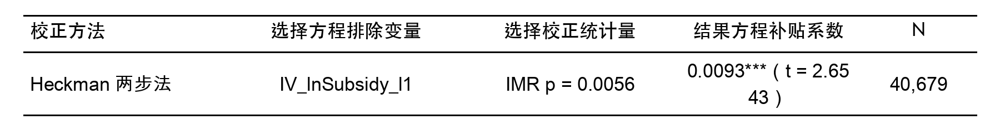
注：选择方程排除变量 IV_lnSubsidy_l1 为滞后一期同城同年其他企业平均补助对数（留一法构造），其经济逻辑在于：同城同年的地方财政政策环境改变企业获补概率，但不直接决定个体企业高管超额薪酬规模。Heckman 选择方程样本量为45,396条，第二阶段方程样本量为40,679条，低于中介统一样本（41,186条），系选择方程排除变量存在额外缺失所致。IMR 表示逆米尔斯比率。第二阶段方程控制 Roa、Lever、Top1 以及公司和年份固定效应，标准误为公司层面聚类稳健标准误。
表4-6显示，逆米尔斯比率显著（p = 0.0056），说明上一年已获补贴样本确有选择偏差。校正后，lnSubsidy_pos_l1 的系数仍为0.0093，并在1%的统计层面上显著，表4-5中的正向估计不宜简单归因于“谁更容易进入正补助样本”这一选择链条。围绕同城、同行业以及精炼双工具变量所做的统一重跑也说明，传统留一法工具变量在当前基准样本中的一阶段整体偏弱、二阶段方向不稳定，因此不纳入正文主表。根据结果来看，新的基准回归适合作为经过选择偏差校正后的稳定条件相关证据。
为进一步从动态角度检验补贴强度抬升是否先于超额薪酬变化，本文围绕“上一年补助金额首次进入正补助样本上四分位区间”构造事件考察。该设定与基准回归的滞后一期补贴口径保持一致：以滞后一期补助金额首次达到高补贴阈值的年份作为事件年，考察事件发生前后超额薪酬的动态变化。当前阈值对应正补助样本的上四分位数，约为3,497.88万元；识别到的处理企业为2,237家，纳入动态检验的样本量为43,417条。动态检验的各期系数和显著性汇总于表4-7。
表4-7 事件研究式动态检验结果
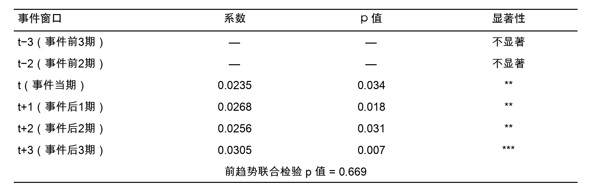
注：、、 分别表示在1%、5%、10%的统计层面上显著。事件定义为上一年补助金额首次进入正补助样本上四分位区间（阈值约3,497.88万元）。处理企业共2,237家。样本量为43,417个公司年度观测。回归控制 Roa、Lever、Top1 以及公司和年份固定效应，标准误为公司层面聚类稳健标准误。事件前各期系数未达到常用显著性标准，此处以”—“标示系数值，仅报告其整体不显著的判断。
联合检验估计显示，事件发生前两期和前三期的系数并不显著，前趋势联合检验的 p 值为0.669，说明在进入高补贴状态之前，处理组与对照组没有明显差别。事件当期及随后1至3期的系数分别为0.0235（p = 0.034）、0.0268（p = 0.018）、0.0256（p = 0.031）和0.0305（p = 0.007），均为正且达到常见显著性标准。结合表4-6中的 Heckman 校正和表4-8中的更严格固定效应估计，可以认为当前基准回归并非完全由样本选择或显著预趋势所驱动。这组证据主要用于收紧识别边界，上四分位数阈值用于识别“补贴强度明显跃升”的时点。
综合以上三类检验，可以从不同角度对基准回归的识别边界做出判断。Heckman两步法解决的是”谁更容易进入正补助样本”的选择偏差来源：逆米尔斯比率显著说明选择偏差确实存在，但校正后补贴系数几乎不变（从0.0094降至0.0093），指向基准回归的正向估计并非主要由样本选择驱动。事件动态检验解决的是”补贴抬升前是否已存在预趋势”的时间先后关系：事件前各期系数不显著、前趋势联合检验p值高达0.669，事件后系数逐期上升且显著，说明超额薪酬的上行确实出现在补贴强度抬升之后而非之前。更严格的行业×年份固定效应则解决的是”行业景气共振是否为遗漏变量”：收紧后系数仍为0.0082且显著，排除了行业年度层面共同冲击的主要干扰。
三类检验从选择偏差、时间先后和遗漏变量三个方向收紧了识别边界，共同支持基准回归结论的稳健性。不过由于缺乏完全外生的政策冲击，正文只将这些证据整体定位为较稳健的条件相关。
在初步确认基准回归经受住内生性处理之后，稳健性部分再从四个方向施加扰动，逐步放松或收紧各项设定，观察结论是否稳定。四项检验的推进顺序如下：先替换被解释变量，查看结论是否依赖 Overpay 残差的特定构造；再缩短样本期，排除早期数据质量差异的干扰；随后仅保留制造业样本，判断该联系在单一行业内部是否仍能成立；最后引入更严格的行业×年份固定效应，检验行业景气共振是否可能构成遗漏变量。相关检验统一汇总在表4-8。
表4-8 稳健性检验结果（聚类标准误）
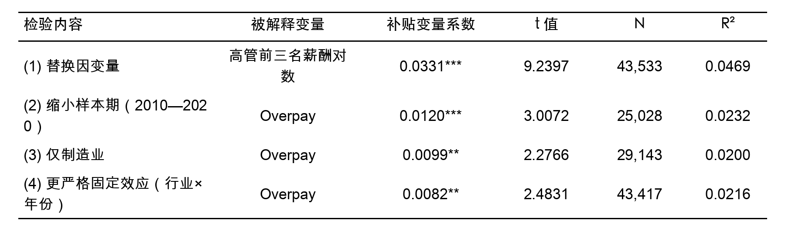
注：、、 分别表示在1%、5%、10%的统计层面上显著。第(1)—(3)项与基准回归保持同一正补助样本口径，控制Roa、Lever、Top1以及公司和年份固定效应；第(4)项在同一正补助样本上进一步将年份固定效应收紧为行业×年份固定效应。标准误为公司层面聚类稳健标准误。
将被解释变量由超额薪酬（Overpay）替换为高管前三名薪酬总额对数后，补贴系数为0.0331，并在1%的统计层面上显著为正。这意味着在已获补贴企业内部，补贴强度与薪酬总额口径之间也存在显著正向关系。将因变量进一步处理为剔除正常部分后的超额薪酬残差后，系数幅度下降，但方向和显著性仍然保留。主结论并不完全依赖某一种薪酬度量方式。
当样本期收窄到 2010—2020 年后，补贴系数为 0.0120，并在 1% 统计水平上显著为正。这说明基准估计并不依赖样本早期年份；时间窗口缩短之后，补贴强度与超额薪酬之间的正向联系依然存在。这样处理还减少了早期信息披露口径差异带来的扰动，使检验更集中于数据质量相对稳定的阶段。
仅保留制造业（样本量29,143）后，补贴系数为0.0099，并在5%的统计层面上显著为正。可见在制造业单一行业内部，已获补贴企业之间的补贴强度差异同样能够对应更高的超额薪酬。制造业样本占比较高且补贴政策覆盖面广，将其单独保留有助于排除跨行业结构差异对主结论的干扰。
在基准回归样本与变量口径保持不变的前提下，将固定效应进一步收紧为“公司固定效应 + 行业×年份固定效应”后，补贴系数仍为0.0082，并在5%的统计层面上显著为正。证明基准回归中的正向关系不是单纯由行业年度景气波动带出。
综合四项检验，在已获补贴企业内部这一强度效应设定下，补贴系数始终保持正向并达到常用显著性标准。据此，H1在新的基准回归口径下获得了较一致的经验支撑；结合前述 Heckman 校正与事件动态检验，可以得出识别边界收紧后的稳健条件相关的结论
本节围绕表4-5的 OLS 基准回归结论展开补充验证。与前文中介效应检验不同，这里不再纳入管理层权力变量，直接沿用基准回归的43,417个公司—年度观测，仅保留 lnSubsidy_pos_l1、Roa、Lever 和 Top1 四个输入变量。样本按公司分组，利用 GroupShuffleSplit 以8:2比例划分为建模样本（34,818条）和保留样本（8,599条），确保同一公司的全部年度观测只落在一端。这样安排后，机器学习部分主要回答四个命题：财政补贴强度在树模型中的全局预测贡献是否仍位于前列、基于 SHAP 的边际贡献排序是否支持同样判断、财政补贴变量在正则化筛选下是否会被压缩为0，以及在更灵活的非线性模型中财政补贴的局部趋势是否仍表现为总体上升。
为进一步验证核心解释变量的信息含量，本文采用随机森林模型对各特征变量的重要性完成排序。随机森林这里采用基于基尼不纯度下降（Gini Impurity Decrease）的特征重要性指标，衡量每个变量在树模型分裂过程中对 Overpay 预测误差下降的平均贡献。某一变量的重要性数值越大，说明它在样本整体预测中提供的信息越多、对模型划分的贡献越高。但应注意，这种“重要性”衡量的是全局预测贡献，不是 OLS 思路下的边际经济效应或因果带动。
表4-9 随机森林特征重要性排名
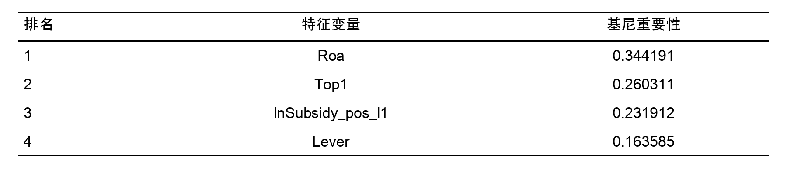
排序估计显示，Roa 和 Top1 位列前两位，lnSubsidy_pos_l1 排名第3，Lever 排名第4。这不表示财政补贴没有传导，而是说明树模型在做全局预测时，会更早利用盈利表现和股权集中度这类方差更大、信息量更广的基本面变量完成样本划分。相比之下，财政补贴更接近政策冲击型变量，其经济关联更多体现为条件性、局部性的强度差异，因此在“预测贡献度”排序中位列第三，并不削弱其在 OLS 基准回归中体现出的独立经济含义。随机森林的重要性排名和计量回归中的显著系数，是在回答两类不同命题。
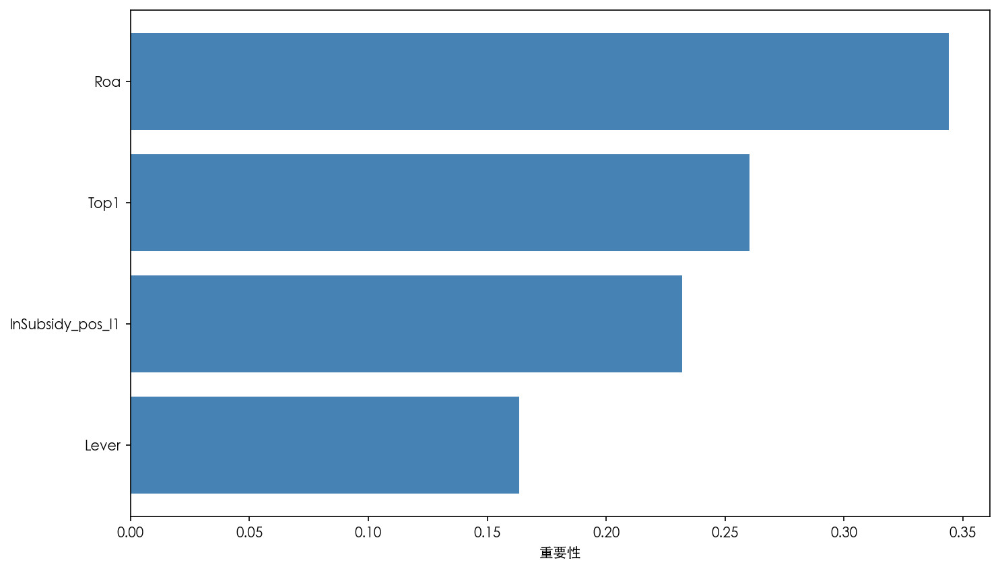
图4-1 随机森林特征重要性图
图4-1进一步直观展示了随机森林的重要性排序。结合表4-9可以看到，财政补贴强度并未被边缘化，反而排在四个特征中的前列。可以据此判断：在控制企业盈利表现、杠杆与股权监督等关键特征之后，财政补贴变量仍保有一定预测信息，与第四章基准回归中其系数显著为正的结论同向。
随机森林基于基尼不纯度得到的重要性，只能反映变量对模型整体预测的贡献大小，难以直接刻画变量对预测值波动的边际牵动强弱。为补足这一点，本文进一步引入 SHAP（SHapley Additive exPlanations）工具，对随机森林模型的预测值做解释。由于TreeSHAP的计算复杂度较高，本文从保留样本中随机抽取2,000条观测，计算各变量的 SHAP 值，以平均绝对 SHAP 值衡量其对模型预测波动的平均边际贡献；平均绝对 SHAP 值越大，说明该变量对预测值的边际牵动越强。
表4-10 SHAP值重要性排名
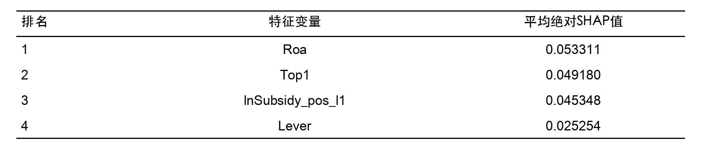
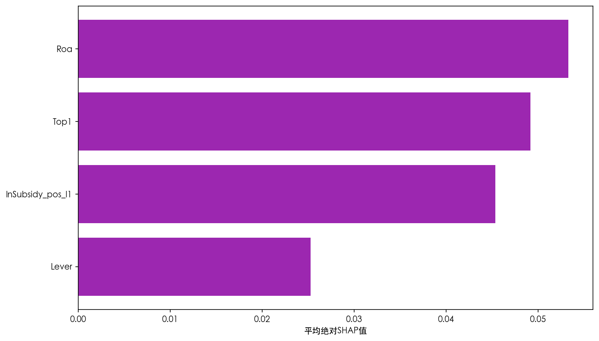
图4-2 SHAP值重要性图
表4-10和图4-2显示，基于平均绝对 SHAP 值得到的排序与随机森林基尼重要性排序完全一致：Roa 和 Top1 仍位列前两位。财政补贴位列第3，Lever 位列第4。换一个解释口径，排序仍未变化，说明财政补贴变量的重要性并非某一种指标偶然给出的统计数值。财政补贴强度虽然不是树模型中最强的全局预测变量，但它对 Overpay 的边际贡献仍处于前列，这与其作为基准回归核心解释变量的设定是一致的。
Lasso 回归属于采用 正则化手段的线性回归模型，核心原理是在回归目标函数中加入惩罚项，把对模型贡献较低的变量系数压缩为零，以此实现特征筛选与模型简化。相较于普通最小二乘回归，Lasso 还能够部分缓解多重共线性带来的估计不稳定议题，因此适合用于检验财政补贴变量在更严格筛选条件下是否仍会被模型保留下来。
在当前4变量设定下，最优惩罚参数约为 。估计显示，4个候选特征均未被压缩为0，其中 lnSubsidy_pos_l1 的系数为0.0685，方向为正；Roa、Lever 与 Top1 的系数分别为-0.0197、-0.0595和-0.0615。由于Lasso回归前已对特征做零均值单位方差标准化，上述系数反映的是标准化尺度上的相对贡献，不宜与 OLS 原始系数直接比较大小，但可以用于判断变量是否被保留以及方向是否发生反转。这里最关键的信息是：财政补贴变量在更严格的正则化筛选下并未被删除，且方向仍与 OLS 基准回归中的正向系数保持一致。
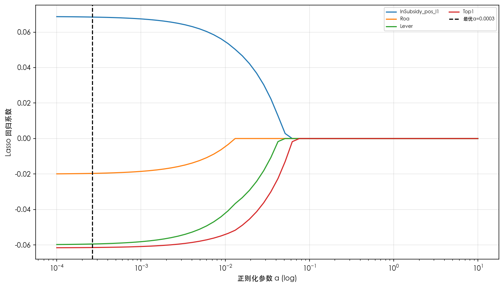
图4-3 Lasso系数收缩图
图4-3展示了随着惩罚参数增大，各特征系数逐步向零收缩的路径。图中lnSubsidy_pos_l1 在最优参数附近仍保持正向系数，没有被压缩掉。财政补贴变量没有在更严格的筛选下消失，仍保有稳定信息含量。
为了查看核心变量在非线性模型中的表现，文中又借助 XGBoost 做了两项补充检验：一是比较财政补贴与控制变量在更灵活树模型中的特征重要性排序；二是利用部分依赖图（Partial Dependence Plot, PDP）描绘财政补贴对应的超额薪酬局部走势。
从特征重要性排序估计来看，在 XGBoost 模型中，Roa 位列第1，lnSubsidy_pos_l1 排名第2。Top1 排名第3，Lever 排名第4。这说明即使在允许更复杂非线性关系的树模型中，财政补贴仍是对 Overpay 具有较高解释贡献的关键特征，其重要性排序与 OLS 基准回归的核心变量设定保持一致。
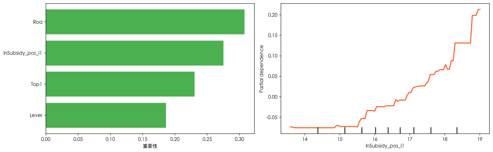
图4-4 XGBoost特征重要性与财政补贴部分依赖图
图4-4右侧的部分依赖图展示的是：在其他变量保持平均水平时，财政补贴变化会怎样带动模型对 Overpay 的预测。它反映的是 XGBoost 模型下的条件联系，并非计量经济学意义上的边际因果效应。就图形本身看，财政补贴的部分依赖关系带有明显的非线性和非单调特征：低补贴区间里，曲线长期停在负值附近，只伴随小幅波动；进入较高补贴区间后，正向预测联系会更突出。
把四种机器学习结果并排看，财政补贴变量始终没有掉队。随机森林和 SHAP 都把它排在第3，XGBoost 排第2，Lasso 也没有把它压成0，且保留的是正系数。换成更直白的话说，哪怕从预测而非计量识别出发，补贴强度仍携带稳定信息。它们给出的方向同 OLS 基准回归也基本一致：Lasso 留住正系数，XGBoost 的部分依赖曲线整体向上。尤其是“低补贴区间较平、高补贴区间抬升更快”的图形特征，补上了 OLS 线性系数不方便直接展示的部分，提示补贴作用并不是在全区间平均铺开，而更像在较高强度时才明显加速。
机器学习部分没有改变第四章已经写明的边界——中介效应经济幅度有限、因果解释仍需谨慎；它提供的是从预测角度对基准回归核心变量地位的独立确认。
Baron & Kenny（1986）[1]的经典设定通常先观察总效应（其模型局限可参见 Zhao、Lynch 和 Chen（2010）[15]的讨论），再讨论中介路径。尽管新的总效应已经显著，本节仍将相关证据定位为探索性路径检验，而非严格层面上的因果中介证据，因为管理层权力指标本身仍属于经验性综合测度。
为检验财政补贴会不会借由管理层权力推高高管超额薪酬，文中把 Power 纳入经验结构。这个指标不是单一原始字段，而是结合中国上市公司治理特征，由两职合一（Dual）、董事会规模（Boardsize）、内部董事比例（Insider）和高管持股比例（Mgshder）四项指标合成。四项指标分别对应正式职位权力、董事会结构权力与所有权权力：两职合一体现高管是否同时掌握董事会与经理层议程，董事会规模和内部董事比例反映董事会监督强弱，高管持股比例则对应所有权层面的正式权力基础。
具体测度时，正文采用主成分拆解法（PCA）提取前两个主成分，再按方差贡献率加权生成综合权力指数 Power。这样处理的含义很直接：先利用四项治理指标的共同变异信息压缩多维特征，再让解释力更高的主成分在最终指数里占更大比重，避免简单平均带来的信息损失。
从统计诊断看，PCA 口径的整体 KMO 约为0.565，前两个主成分累计方差解释率约为69.08%。其中，PC1（43.0%）主要载荷于 Boardsize（0.615）与 Insider（0.544），更贴近董事会结构权力；PC2（26.1%）主要载荷于 Mgshder（0.584）、Dual（0.554）和 Insider（0.517），更多反映所有权与职位权力。四项指标在样本里确实呈现出可区分的结构。KMO 偏低意味着共同变异不算强、潜在结构也不算紧密，但PCA在这里的主要用途是降维和信息压缩。只要前几个主成分能够覆盖样本中的主要方差信息，这一综合口径仍可作为经验测度。对本文而言，69.08%的累计方差解释率已经覆盖了大部分信息，因此仍将其用作管理层权力的经验性综合指标，同时在解释上保持审慎。
在完成选择偏差校正后，将基于 PCA 构造的管理层权力指标纳入中介效应检验结构。为保证模型3至模型5之间具有可比性，这一部分统一使用同时具备 Overpay、Power 与滞后一期正补助信息的样本。统一后的样本量为41,186个公司年度观测。表4-11给出结果。需注意，由于统一样本（41,186条）少于基准回归样本（43,417条），模型3中的总效应系数与表4-5的基准回归系数略有差异，这一变化主要来自样本组成调整，而非模型设定改变。
表4-11 管理层权力的中介效应检验结果（模型3至模型5，PCA口径）
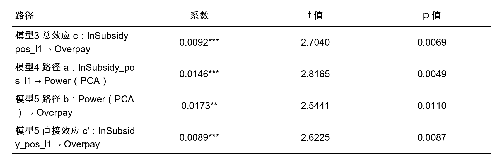
注：、、 分别表示在1%、5%、10%的统计层面上显著。标准误为公司层面聚类稳健标准误，对应回归均控制 Roa、Lever、Top1 以及公司和年份固定效应。
表4-11显示，PCA 口径下中介链条的三步路径均达到显著性标准。统一样本上的总效应（模型3）系数为0.0092，并在1%的统计层面上显著；路径 的系数为0.0146，也在1%的统计层面上显著（p = 0.005），说明补贴强度上升与管理层权力抬升相伴随；模型5中，Power 的系数为0.0173，在5%的统计层面上显著（p = 0.011），提示在控制补贴强度后，管理层权力仍与超额薪酬存在正向关联；补贴的直接效应 为0.0089，仍在1%的统计层面上显著（p = 0.009），说明补贴对超额薪酬的牵动有一部分经由管理层权力传导，另一部分仍保留在直接路径上。Bootstrap 检验（本文采用300次重复抽样，主要考虑到样本量较大且间接效应置信区间边界距零较远，结论对抽样次数不敏感）的间接效应95%置信区间为[0.000034, 0.000609]，不包含零，对应 p = 0.007，与三步回归的方向一致。Sobel 检验的 p 值为0.059，仅处于边际显著性标准。考虑到 Sobel 对间接效应正态性的假设更强，文中仍以 Bootstrap 结论作为主要参考。
综合看，PCA 口径下管理层权力在补贴强度与超额薪酬之间发挥了部分中介角色，H2 获得支持。从经济含义来看，间接效应（）仅占总效应（0.0092）的约3%，说明补贴强度对超额薪酬的牵动绝大部分通过直接路径传导，经由管理层权力中介的部分非常有限。这一证据的一个解释是：补贴资源对超额薪酬的直接推动（如改善账面业绩后被纳入绩效薪酬基数、放松董事会的支付约束等）远强于管理层权力扩张所带来的间接作用。
产权性质依据CSMAR数据库中“企业属性”字段划分，国有企业包括中央国有和地方国有，私营企业为实际控制人性质明确标记为民营的样本。由于基准回归已经限定为上一年已获补贴的公司年度，分组回归的样本边界与表4-5保持一致，只是在各组内分别重复估计同一基准回归模型，对应估计见表4-12。
表4-12 产权性质分组基准回归结果（模型2）
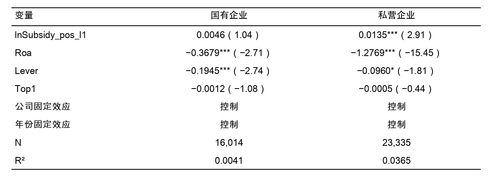
注：括号内为 值；、、 分别表示在1%、5%、10%的统计层面上显著，标准误为公司层面聚类稳健标准误。
产权性质分组的核心信息已经比较清楚：国有企业组的补贴强度系数虽为正（0.0046），但未达到常见显著性标准（t = 1.04）；私营企业组的系数为0.0135，并在1%的统计层面上显著为正。这说明在新的基准回归口径下，补贴强度与超额薪酬之间的正向关联主要集中在私营企业，而在国有企业中并未形成稳健证据。
这种分化首先来自制度约束硬度的不同。2015年国务院出台的《中央管理企业负责人薪酬制度改革方案》对国有企业高管薪酬设定了明确上限，并要求薪酬与经营业绩、职工收入挂钩。在这类行政限薪安排下，即便国有企业获得更高额度的财政补贴，高管薪酬的上调空间也会被制度天花板压住，补贴资源自然不容易直接转成额外报酬。私营企业的薪酬形成更多依赖市场通道和董事会内部协商，外部行政硬约束相对薄弱，所以补贴带来的资源扩张更容易变成高管在薪酬谈判里的筹码。
再往深一层看，差别还来自委托代理链条的长短。国有企业通常处在多层监督结构之中：国资委、党委会、董事会和经理层之间相互嵌套。党委会在“三重一大”框架下对高管薪酬有实质性审议权，国资委的年度经营考核也会压住薪酬总额。层层监督叠加在一起，会明显压缩管理层借补贴资源抬高薪酬的空间。私营企业的代理链条则短得多，虽然大股东理论上承担监督角色，但一旦实际控制人与高管身份重叠或双方关系过于紧密，内部制衡就容易失灵。
从模型拟合表现看，国有企业组的R²（0.0041）远低于私营企业组（0.0365）。这说明在国有企业内部，当前模型纳入的市场化治理变量（Roa、Lever、Top1）对超额薪酬变动的解释力较弱。由此也能看出，国有企业高管薪酬的形成，更容易受行政体制和组织安排牵动，而不只是由市场化财务变量决定。
此外，在国有企业内部进一步区分央企与地方国企后，两组补贴强度系数均未达到统计显著标准，说明产权差异主要停留在国有与私营这一层面，不存在央地国企之间的进一步分化。这一回归估计提示，限薪令和多层监督链条对央企和地方国企的约束效力大致相当，产权性质差异的核心分野在于国有与私营之间的制度鸿沟。
根据行业进入壁垒、价格监管和公共事业属性，将采掘业、电力热力燃气及水的生产和供应业、交通运输仓储和邮政业、信息传输软件和信息技术服务业中的电信部分以及金融业关联行业归为管制行业，其余归为非管制行业。按此标准将样本划分为两组，并在各组内分别重复估计新的基准回归模型，对应估计见表4-13。
表4-13 行业管制强度分组基准回归结果（模型2）
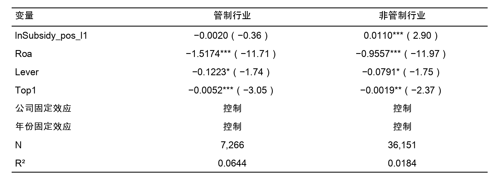
注：括号内为 值；、、 分别表示在1%、5%、10%的统计层面上显著，标准误为公司层面聚类稳健标准误。
行业管制分组下，非管制行业组的补贴强度系数为0.0110，并在1%的统计层面上显著为正；管制行业组系数为−0.0020，为负但远未达到显著性标准（t = −0.36）。这说明补贴强度与超额薪酬的正向关联主要出现在非管制行业，在管制行业中这一传导路径基本不成立。
行业管制强弱带来的差异，同样可以从制度环境来理解。管制行业首先面临更严格的补贴用途约束。采掘业、电力热力燃气及水的生产和供应业、交通运输等行业往往带有公共事业属性，其获得的财政补贴通常附着明确用途，例如基础设施建设或价格稳定补贴，资金被挪作他用的空间较小。非管制行业获得的补贴则更多表现为研发补助、产业扶持等形式，使用上的自由裁量权更大，管理层在资源分配中的话语权也更强，因此补贴更容易在企业内部变成薪酬议价筹码。
再看外部监管的频率和深度。价格管制通道、行业准入审批、定期监管核查和信息披露要求，使管制行业企业的经营与财务状况长期处在较高外部关注之下。这种持续存在的监管压力，会对高管薪酬安排形成更强的外部制衡，从而削弱补贴资源向超额薪酬传导的空间。相较之下，非管制行业企业在薪酬制定上保留了更大的市场化空间，外部监管介入较少，补贴与薪酬之间的联动也更容易出现。
管制行业组的Top1系数（−0.0052，1%显著）明显大于非管制行业组（−0.0019，5%显著），这说明在管制行业里，大股东监督对超额薪酬的压制更强。考虑到管制行业中国有资本占比通常更高，大股东往往就是国资机构，其对薪酬安排的约束力度也更足。这也有助于理解为何管制行业的R²（0.0644）反而高于非管制行业（0.0184）：在前者内部，财务杠杆和股权监督等控制变量对超额薪酬的解释力度更大，说明薪酬安排更容易被制度约束和外部监督牵动。
综合产权性质和行业管制两个维度的异质性检验，本文的结论是：补贴强度与超额薪酬的正向关联，主要出现在制度约束较弱、市场化程度较高的企业群体中（私营企业、非管制行业），在制度约束较强的企业（国有企业、管制行业）中并不显著。这一格局与第二章理论考察中“治理约束强度调节补贴—薪酬传导”的推断高度一致，为差异化监管政策的制定提供了经验参考。
本文以2003—2024年沪深A股上市公司（剔除金融行业及特殊处理样本）为样本，在管理者权力理论和代理理论安排下，考察财政补贴、高管超额薪酬与管理层权力之间的关系。与旧的全样本平均效应思路不同，本文将核心疑问收束为“已获得财政补贴的上市公司内部，补贴强度是否伴随更高的高管超额薪酬”。全文大体形成五点认识。整体上，财政补贴与高管超额薪酬之间存在较一致的条件相关。
（1）在“上一年已获得补贴”的公司年度中，滞后一期补贴强度与高管超额薪酬呈显著正相关。 基准回归中，lnSubsidy_pos_l1 的系数为0.0094（p = 0.005）。也就是说，对已经获补贴的企业而言，补贴额度增加往往对应更高的后续超额薪酬。与旧的全样本 口径相比，这里把“是否得到补贴”和“得到后多少”分开估计，更贴近本文真正关心的强度问题。若按经济量级理解，该系数约对应0.016个标准差的残差变化，统计上稳健但幅度有限。这与财政补贴作为条件性政策冲击的性质相符：补贴不是企业主要收入来源，它对高管薪酬的边际牵动通常弱于盈利和规模等核心因素。
（2）把回归设定来回替换后，这个正向估计仍然站得住，异质性分布也比较清楚。因变量改成高管前三名薪酬对数时，补贴强度系数为0.0331（p < 0.001）；样本期收窄到2010—2020年后，系数为0.0120（p = 0.003）；只看制造业样本，系数为0.0099（p = 0.023）；再放入行业×年份固定效应，系数仍有0.0082（p = 0.013）。分组结果显示，显著正向关系主要落在私营企业（0.0135，p = 0.004）和非管制行业（0.0110，p = 0.004），国有企业、管制行业以及央地国企内部都没有得到稳健显著估计。这种分布与制度背景基本吻合：国有企业受行政限薪和组织考核约束更强，管制行业外部约束也更多；私营企业和非管制行业的薪酬安排更依赖市场协商与内部谈判，所以补贴扩张更容易转成高管议价空间。
（3）选择偏差校正和事件动态检验都没有把基准回归方向扭转过来，但因果解释仍要保持克制。在基准回归口径下，Heckman 两步法中的逆米尔斯比率显著（p = 0.0056），校正后的补贴系数仍为0.0093（p = 0.008），说明主估计不适合简单归因于样本选择。再看事件研究，前趋势联合检验的 p 值为0.669，事件当期及随后1至3期的系数分别为0.0235（p = 0.034）、0.0268（p = 0.018）、0.0256（p = 0.031）和0.0305（p = 0.007）。这说明高补贴事件发生前没有观察到显著预趋势，而事件之后超额薪酬则持续上行。表4-5里的正向结论在识别边界收紧后仍然存在，但正文仍把它理解为较稳健的条件相关，而不是无条件的强因果效应。
（4）PCA 口径下，管理层权力在补贴强度与超额薪酬之间确实留有一条部分中介路径。 这表明 H2 得到支持，不过经济量级并不大。 路径 （补贴强度 管理层权力）系数为正且显著（0.0146，p = 0.005），路径 （管理层权力 超额薪酬）同样为正且显著（0.0173，p = 0.011），直接效应 仍在1%层面显著（0.0089，p = 0.009）。Bootstrap 间接效应95%置信区间为[0.000034, 0.000609]，区间不跨零（p = 0.007），说明经由管理层权力的间接传导在统计上成立。不过，间接效应只占总效应约3%，因此更合适的理解是：权力渠道存在，但传导力度有限。
（5）在与基准回归完全一致的43,417条样本上，机器学习部分给出了另一组辅助证据。随机森林里，lnSubsidy_pos_l1 在4个输入特征中排第3；基于随机森林计算的平均绝对SHAP值中，它仍排第3；Lasso 估计没有把 lnSubsidy_pos_l1 压缩为0，而且保留的是正系数；XGBoost 的特征重要性里，该变量排第2，财政补贴的部分依赖曲线总体也向上。由此可以看到，在保持基准回归样本与变量口径一致的前提下，财政补贴强度在预测层面的正向信息并没有消失。机器学习检验在本文里仍是辅助验证，不能替代计量回归中的显著性判断和因果识别。
基于上述全文结论，从财政补贴监管以及薪酬治理与信息披露两个维度给出政策建议。由于给出的是关于条件相关及其敏感性的证据，而非已被稳健识别的因果效应，下列建议更适合作为治理启示，而非直接的政策因果处方。
（1）完善财政补贴项目的事后跟踪和信息对表约束。 正文识别到的重点，不是“全样本平均补贴效应”，而是已获补贴企业内部的强度差异。因此，监管时不宜预先设定“补贴一定会推高高管薪酬”，更应盯住补贴金额上升后，资金用途、项目产出和薪酬变动之间有没有异常背离。对于获得大额补贴的企业，可以要求其在补贴使用报告中同步披露补贴计入利润的金额、项目执行进度、绩效完成情况以及高管薪酬变动，并把这些信息纳入后续补贴续期和规模调整的参考条件。
（2）强化受补贴上市公司的薪酬治理披露，并把核查重点更多放在风险导向上。监管机构可进一步要求上市公司把高管薪酬决定安排、绩效达标标准、薪酬委员会独立性评估证据，以及补贴是否进入绩效考核基数讲清楚。对补贴规模较大、且机器学习补充部分中财政补贴变量持续排位靠前的企业，可以把这些数据检验信号当作内部核查线索，但不宜直接把图形或排序证据当成处罚与政策调整依据。更合适的做法，是用它们帮助提高透明度，降低识别异常薪酬的成本。
（3）针对产权性质和行业特征实施差异化监管。 异质性检验提示，补贴强度与超额薪酬的正向关联主要集中在私营企业和非管制行业，国有企业和管制行业则不显著。据此，监管部门在设计补贴后续监督链条时，可对私营企业和非管制行业适当加强薪酬信息披露要求和补贴使用核查力度；对国有企业，则可继续完善现有限薪设定下的补贴绩效对表通道，确保行政约束与市场激励协调互补。
本文已就财政补贴与高管超额薪酬之间的关系做了较为系统的检验，但受数据条件和识别做法限制，以下三个方向仍有待深化。
文章借助公司固定效应、行业×年份固定效应、事件动态检验以及面向正补助样本的 Heckman 两步法，对内生性与选择偏差来源作了较系统的处理。即便如此，这些工具更多还是在当前样本边界内收紧识别，而不是提供完全外生的政策冲击；围绕当前基准样本统一重跑的传统留一法工具变量，也未能给出稳定的一阶段支撑。后续若要继续推进，可以结合更具外生性的政策冲击，引入双重差分（DID）、断点回归（RDD）或其他准自然实验设计，进一步增强因果识别的严谨性。此外，事件文献中高补贴事件目前固定取上四分位阈值，之后也可检验替代阈值下动态结论是否敏感。
核心变量的测度精度也有继续打磨的空间。文中把讨论重点放在已获补贴企业内部的补贴强度差异上，并主要依据可观测治理特征刻画管理层权力，这有助于搭起统一的实证结构；但对补贴类型差异、补贴进入样本之前的选择逻辑，以及隐性权力来源的反映仍不够充分。后续可以将研发补贴、纾困补贴、税收返还等不同类型的政策支持拆开考察，并结合高管履历、政治关联和年报文本等信息，构造更细的变量口径。
样本外验证与多源数据融合也值得继续推进。机器学习部分虽然已经做了建模样本与保留样本划分，并结合按公司分组的交叉验证，但整体上仍受限于当前样本设定，年报、社会责任报告和媒体报道等文本信息的利用也相对有限，因此相关证据更多体现为对传统回归结论的补充。又由于机器学习部分严格限制在与基准回归一致的样本和四变量设定之内，第四章这组检验更适合被当作“已获补贴企业内部补贴强度效应”的辅助证据，而不宜机械外推到全部基础样本或更宽的特征空间。今后可借助滚动窗口、跨市场样本和多源文本融合等方式，考察模型在不同阶段、不同情境下的稳健性，从而更完整地刻画财政补贴与高管薪酬关系的边界。
[1]BARON R M, KENNY D A. The moderator-mediator variable distinction in social psychological research: Conceptual, strategic, and statistical considerations[J]. Journal of Personality and Social Psychology, 1986, 51(6): 1173–1182.
[2]BEBCHUK L A, FRIED J M. Executive compensation as an agency problem[J]. Journal of Economic Perspectives, 2003, 17(3): 71–92.
[3]BHATTACHARYA I, MIĆKOVIĆ A. Accounting fraud detection using contextual language learning[J]. International Journal of Accounting Information Systems, 2024, 53: 100682.
[4]BU D, SHALCHIAN H, HUANG R, et al. Government subsidy, corporate pay-gap and firm’s financial performance: Evidence from China[J]. Accounting and Finance Research, 2019, 8(3): 86.
[5]CORE J E, HOLTHAUSEN R W, LARCKER D F. Corporate governance, CEO compensation, and firm performance[J]. Journal of Financial Economics, 1999, 51(3): 371–406.
[6]FINKELSTEIN S. Power in top management teams: Dimensions, measurement, and validation[J]. Academy of Management Journal, 1992, 35(3): 505–538.
[7]GU S, KELLY B, XIU D. Empirical asset pricing via machine learning[J]. The Review of Financial Studies, 2020, 33(5): 2223–2273.
[8]JENSEN M C, MECKLING W H. Theory of the firm: Managerial behavior, agency costs and ownership structure[J]. Journal of Financial Economics, 1976, 3(4): 305–360.
[9]JIANG H, SU K, HABIB A. Government subsidies and managerial slack: Evidence from China[J]. Journal of Contemporary Accounting & Economics, 2025, 21(2): 100473.
[10]KETELAAR F, MIĆKOVIĆ A. Artificial Intelligence in fraud detection: textual analysis of 10-K filings[J]. Maandblad voor Accountancy en Bedrijfseconomie, 2025, 99(2): 61–71.
[11]LI F. Annual report readability, current earnings, and earnings persistence[J]. Journal of Accounting and Economics, 2008, 45(2–3): 221–247.
[12]PEROLS J, BOWEN R M, ZIMMERMANN C, et al. Finding needles in a haystack: Using data analytics to improve fraud prediction[J]. The Accounting Review, 2017, 92(2): 221–245.
[13]RJIBA H, SAADI S, BOUBAKER S, et al. Annual report readability and the cost of equity capital[J]. Journal of Corporate Finance, 2021, 67: 101902.
[14]SPENCE M. Job market signaling[J]. The Quarterly Journal of Economics, 1973, 87(3): 355–374.
[15]ZHAO Y, LYNCH J G, CHEN Q. Reconsidering Baron and Kenny: Myths and truths about mediation analysis[J]. Journal of Consumer Research, 2010, 37(2): 197–206.
[16]步丹璐，王晓艳. 政府补助、软约束与薪酬差距[J]. 南开管理评论，2014，17(2): 23–33.
[17]陈冬华，陈信元，万华林. 国有企业中的薪酬管制与在职消费[J]. 经济研究，2005，40(2): 92–101.
[18]方军雄. 我国上市公司高管薪酬存在粘性吗？[J]. 经济研究，2009，44(3): 110–124.
[19]李哲，王文翰，王遥. 企业环境责任表现与政府补贴获取——基于文本分析的经验证据[J]. 财经研究，2022，48(2): 78–92.
[20]卢锐，柳建华，许宁. 内部控制、产权与高管薪酬业绩敏感性[J]. 会计研究，2011(10): 42–48.
[21]陆瑶，张叶青，黎波，等. 高管个人特征与公司业绩——基于机器学习的经验证据[J]. 管理科学学报，2020，23(2): 120–140.
[22]罗进辉. 媒体报道与高管薪酬契约管用性[J]. 金融研究，2018(3): 190–206.
[23]罗昆，曹光宇. 财务困境、超额薪酬与薪酬业绩敏感性——基于政府补贴的调节效应[J]. 华中农业大学学报（社会科学版），2015(6): 109–117.
[24]马长峰，陈志娟，张顺明. 基于文本大数据分析的会计和金融研究综述[J]. 管理科学学报，2020，23(9): 19–30.
[25]潘红波，夏新平，余明桂. 政府干预、政治关联与地方国有企业并购[J]. 经济研究，2008(4): 41–52.
[26]唐清泉，罗党论. 政府补贴动机及其效果的实证研究——来自中国上市公司的经验证据[J]. 金融研究，2007(6): 149–163.
[27]王克敏，王华杰，李栋栋，等. 年报文本信息复杂性与管理者自利——来自中国上市公司的证据[J]. 管理世界，2018，34(12): 120–132.
[28]连君莎. 政府补贴、内部控制质量与企业投资效率[D]. 武汉：武汉理工大学，2020.
[29]吴妍. 政府补助与高管超额薪酬的实证研究[D]. 武汉：中南财经政法大学，2019.
[30]徐坤. 管理层语调与企业未来业绩的关系[D]. 北京：北京交通大学，2021.
[31]章海浪. 内部控制缺陷、薪酬公平性与高管腐败[D]. 杭州：浙江工商大学，2021.
[32]张莉莉. 政府补助对国企上市公司高管超额薪酬的影响研究[D]. 湘潭：湖南科技大学，2019.
Python 代码实现
附录目录
序号 | 模块 | 说明 |
A.1 | 共同依赖与参数设置 | 导入库、统一常量与通用辅助函数 |
A.2 | 数据预处理 | 原始 .dta 转 .csv 与多文件拼接 |
A.3 | 数据加载与清洗 | 多源数据合并、样本筛选与基础清洗 |
A.4 | 变量构造 | 补贴、超额薪酬、管理层权力底层指标等变量 |
A.5 | 期望薪酬模型 | OLS 基准模型与 Overpay 残差提取 |
A.6 | 管理层权力 PCA | PCA 综合指数的构造与方向统一 |
A.7 | 主回归与识别边界检验 | 固定效应回归、Heckman、IV、事件动态与中介检验 |
A.8 | 稳健性与异质性分析 | 替代变量、样本收缩、分组回归 |
A.9 | 机器学习补充验证 | 随机森林、SHAP、Lasso、XGBoost |
A.1 共同依赖与参数设置
from pathlib import Path
import re
import numpy as np
import pandas as pd
import shap
import statsmodels.api as sm
import xgboost as xgb
from linearmodels.panel import PanelOLS
from linearmodels.iv import IV2SLS
from scipy import stats
from sklearn.decomposition import PCA
from sklearn.ensemble import RandomForestRegressor
from sklearn.inspection import partial_dependence
from sklearn.linear_model import Lasso
from sklearn.metrics import r2_score
from sklearn.model_selection import (
GroupKFold,
GroupShuffleSplit,
RandomizedSearchCV,
cross_val_score,
)
from sklearn.pipeline import Pipeline
from sklearn.preprocessing import StandardScaler
try:
from factor_analyzer.factor_analyzer import (
calculate_bartlett_sphericity,
calculate_kmo,
)
except ImportError:
calculate_bartlett_sphericity = None
calculate_kmo = None
ROOT_DIR = Path.cwd()
RAW_DIR = ROOT_DIR / "data"
PROCESSED_DIR = ROOT_DIR / "processed_data"
OUTPUT_DIR = ROOT_DIR / "output"
ALT_SUBSIDY_LAG_COL = "lnSubsidy_pos_l1"
MAIN_SUBSIDY_LAG_COL = "lnSubsidy_pos_l1"
FE_CONTROL_VARS = ["Roa", "Lever", "Top1"]
MAIN_MEDIATION_BOOTSTRAP_REPS = 300
BOOTSTRAP_RANDOM_SEED = 20260414
EAST_PROVINCES = {
"北京", "天津", "河北", "上海", "江苏", "浙江", "福建", "山东", "广东", "海南", "辽宁",
}
ALL_PROVINCES = {
"北京", "天津", "河北", "山西", "内蒙古", "辽宁", "吉林", "黑龙江",
"上海", "江苏", "浙江", "安徽", "福建", "江西", "山东", "河南",
"湖北", "湖南", "广东", "广西", "海南", "重庆", "四川", "贵州",
"云南", "西藏", "陕西", "甘肃", "青海", "宁夏", "新疆",
}
REGULATED_INDUSTRIES = {"电力", "燃气", "自来水", "铁路", "航空", "电信", "金融"}
SPECIAL_TREATMENT_MARKERS = ("ST", "*ST", "S*ST", "SST", "PT", "退")
def _to_symbol(value) -> str:
"""统一股票代码为 6 位字符串。"""
if pd.isna(value):
return np.nan
value = str(value).strip()
digits = re.sub(r"\\D", "", value)
if not digits:
return np.nan
return f"{int(digits):06d}"
def _winsorize_series(series: pd.Series, lower=0.01, upper=0.99) -> pd.Series:
"""按分位数缩尾。"""
clean = series.dropna()
if clean.empty:
return series
lower_q = clean.quantile(lower)
upper_q = clean.quantile(upper)
return series.clip(lower=lower_q, upper=upper_q)
def _classify_pvalue_signal(pvalue: float) -> str:
"""将 p 值转成论文里常用的显著性表述。"""
if pd.isna(pvalue):
return "缺失"
if pvalue < 0.01:
return "1% 水平显著"
if pvalue < 0.05:
return "5% 水平显著"
if pvalue < 0.10:
return "10% 水平显著"
return "不显著"
def _ci_excludes_zero(ci_lower: float, ci_upper: float) -> bool:
"""判断置信区间是否跨零。"""
if pd.isna(ci_lower) or pd.isna(ci_upper):
return False
return ci_lower > 0 or ci_upper < 0
A.2 数据预处理：原始 .dta 转 .csv
def process_dta_files(input_dir: Path, output_dir: Path) -> None:
"""将 .dta 转成 .csv，并处理“两个文件上下拼接”的情况。"""
input_dir = Path(input_dir)
output_dir = Path(output_dir)
output_dir.mkdir(parents=True, exist_ok=True)
dta_files = sorted(input_dir.glob("*.dta"))
print(f"发现 {len(dta_files)} 个 .dta 文件")
processed = set()
for file_path in dta_files:
filename = file_path.name
if filename in processed:
continue
if "两个文件上下拼接" in filename:
prefix = filename.split("（")[0]
part_files = sorted(
p for p in dta_files
if p.name.startswith(prefix) and "两个文件上下拼接" in p.name
)
if not part_files:
continue
frames = []
for part in part_files:
frames.append(pd.read_stata(part))
processed.add(part.name)
combined = pd.concat(frames, ignore_index=True)
combined.to_csv(output_dir / f"{prefix}.csv", index=False, encoding="utf-8-sig")
print(f"[拼接完成] {prefix}.csv")
continue
df = pd.read_stata(file_path)
df.to_csv(output_dir / f"{file_path.stem}.csv", index=False, encoding="utf-8-sig")
processed.add(filename)
print(f"[转换完成] {file_path.stem}.csv")
if __name__ == "__main__":
process_dta_files(RAW_DIR, PROCESSED_DIR)
A.3 数据加载与清洗
def load_and_clean_data(file_map: dict[str, Path]) -> pd.DataFrame:
"""
读取并合并 7 类原始数据。
file_map 应包含以下键：
finance, governance, debt, pay, region, ownership, subsidy
"""
required_keys = {
"finance", "governance", "debt", "pay", "region", "ownership", "subsidy",
}
missing = required_keys - set(file_map)
if missing:
raise ValueError(f"缺少必要文件映射: {sorted(missing)}")
# 1. 财务数据
df_fin = pd.read_csv(file_map["finance"])
df_fin = df_fin.rename(
columns={
"id": "Symbol",
"year": "Year",
"OperatingEvenue": "Revenue",
"营业收入": "Revenue",
"净利润": "NetProfit",
"总资产": "TotalAssets",
"无形资产": "IntangibleAsset",
"行业代码": "IndustrySector",
}
)
df_fin["Symbol"] = df_fin["Symbol"].apply(_to_symbol)
df_fin["Year"] = pd.to_numeric(df_fin["Year"], errors="coerce")
# 2. 治理数据
df_gov = pd.read_csv(file_map["governance"])
df_gov = df_gov.rename(
columns={
"Enddate": "EndDate",
"董事会规模": "DirectorNumber",
"独立董事占比": "IndependentDirectorRatio",
"内部董事占比": "InternalDirectorProportion",
"两职合一": "DualjointTitle",
"管理层持股比例": "ManagementHoldingPercentage",
}
)
df_gov["Symbol"] = df_gov["Symbol"].apply(_to_symbol)
df_gov["Year"] = pd.to_datetime(df_gov["EndDate"]).dt.year
df_gov = df_gov.sort_values(["Symbol", "Year"]).drop_duplicates(["Symbol", "Year"], keep="last")
# 3. 负债数据
df_debt = pd.read_csv(file_map["debt"])
df_debt = df_debt.rename(columns={"Enddate": "EndDate", "总负债": "TotalLiability"})
df_debt["Symbol"] = df_debt["Symbol"].apply(_to_symbol)
df_debt["Year"] = pd.to_datetime(df_debt["EndDate"]).dt.year
df_debt = df_debt[["Symbol", "Year", "TotalLiability"]]
# 4. 薪酬数据
df_pay = pd.read_csv(file_map["pay"])
df_pay = df_pay.rename(
columns={
"高管前三名薪酬总合": "Top3Salary",
"高管前三名薪酬总额": "Top3Salary",
}
)
df_pay["Symbol"] = df_pay["Symbol"].apply(_to_symbol)
df_pay["Year"] = pd.to_datetime(df_pay["Year"]).dt.year
# 5. 地区数据
df_region = pd.read_csv(file_map["region"])
df_region = df_region.rename(
columns={
"注册地址": "ADDRESS_REGISTER",
"办公地址": "ADDRESS_OFFICE",
"城市": "City",
}
)
df_region["Symbol"] = df_region["Symbol"].apply(_to_symbol)
if "Year" not in df_region.columns and "EndDate" in df_region.columns:
df_region["Year"] = pd.to_datetime(df_region["EndDate"]).dt.year
# 6. 股东结构/产权数据
df_owner = pd.read_csv(file_map["ownership"])
df_owner = df_owner.rename(
columns={
"第一大股东持股比例": "LargestHolderRate",
"所有制性质": "Ownership",
"是否国有": "IsSOE",
"是否央企": "IsCentralSOE",
}
)
df_owner["Symbol"] = df_owner["Symbol"].apply(_to_symbol)
if "Year" not in df_owner.columns and "EndDate" in df_owner.columns:
df_owner["Year"] = pd.to_datetime(df_owner["EndDate"]).dt.year
# 7. 政府补助
df_subsidy = pd.read_csv(file_map["subsidy"])
df_subsidy = df_subsidy.rename(
columns={
"政府补助": "SubsidyAmount",
"财政补贴": "SubsidyAmount",
}
)
df_subsidy["Symbol"] = df_subsidy["Symbol"].apply(_to_symbol)
if "Year" not in df_subsidy.columns and "EndDate" in df_subsidy.columns:
df_subsidy["Year"] = pd.to_datetime(df_subsidy["EndDate"]).dt.year
merge_keys = ["Symbol", "Year"]
merged = df_fin.copy()
for right_df in [df_gov, df_debt, df_pay, df_region, df_owner, df_subsidy]:
merged = merged.merge(right_df, on=merge_keys, how="left")
merged = _apply_sample_filters(merged)
return merged.reset_index(drop=True)
def _apply_sample_filters(df: pd.DataFrame) -> pd.DataFrame:
"""按正文口径进行样本筛选。"""
df = df.copy()
# 剔除金融行业
if "IndustrySector" in df.columns:
finance_mask = df["IndustrySector"].astype(str).str.contains("J|金融", na=False)
df = df.loc[~finance_mask].copy()
# 剔除 ST、*ST 等特殊处理样本
if "ShortName" in df.columns:
st_mask = df["ShortName"].astype(str).apply(
lambda x: any(marker in x for marker in SPECIAL_TREATMENT_MARKERS)
)
df = df.loc[~st_mask].copy()
# 基础数值清洗
numeric_cols = [
"Revenue", "NetProfit", "TotalAssets", "IntangibleAsset",
"TotalLiability", "Top3Salary", "SubsidyAmount", "LargestHolderRate",
]
for col in numeric_cols:
if col in df.columns:
df[col] = pd.to_numeric(df[col], errors="coerce")
df["SubsidyAmount"] = df["SubsidyAmount"].fillna(0)
return df
A.4 变量构造
def construct_variables(df: pd.DataFrame) -> pd.DataFrame:
"""根据论文口径构造全部核心变量。"""
df = df.copy()
df["SubsidyAmount"] = df["SubsidyAmount"].fillna(0).clip(lower=0)
# 1. 薪酬与补贴变量
df["lnCEOpay"] = np.log(df["Top3Salary"].where(df["Top3Salary"] > 0))
df["lnSubsidy"] = np.log1p(df["SubsidyAmount"].clip(lower=0))
df["lnSubsidy_pos"] = np.log(df["SubsidyAmount"].where(df["SubsidyAmount"] > 0))
# 2. 财务控制变量
df["Roa"] = df["NetProfit"] / df["TotalAssets"]
df["lnSale"] = np.log(df["Revenue"].where(df["Revenue"] > 0))
df["IA"] = df["IntangibleAsset"] / df["TotalAssets"]
df["Lever"] = df["TotalLiability"] / df["TotalAssets"]
df["Top1"] = df["LargestHolderRate"]
# 3. 区域与产权变量
df["Zone"] = df.apply(
lambda row: _classify_zone_from_location(
row.get("City"),
row.get("ADDRESS_REGISTER"),
row.get("ADDRESS_OFFICE"),
),
axis=1,
)
df["Province"] = df.apply(
lambda row: _extract_province_from_location(
row.get("City"),
row.get("ADDRESS_REGISTER"),
row.get("ADDRESS_OFFICE"),
),
axis=1,
)
df["OwnerType"] = df["Ownership"].apply(classify_ownership)
derived_soe = np.where(df["OwnerType"].isin({"中央国有企业", "地方国有企业"}), 1, 0)
if "IsSOE" in df.columns:
df["IsSOE"] = pd.to_numeric(df["IsSOE"], errors="coerce")
df["IsSOE"] = df["IsSOE"].fillna(pd.Series(derived_soe, index=df.index)).astype(int)
else:
df["IsSOE"] = derived_soe
df["IsPrivate"] = np.where(df["OwnerType"] == "私营企业", 1, 0)
derived_central = np.where(df["OwnerType"] == "中央国有企业", 1, 0)
if "IsCentralSOE" in df.columns:
df["IsCentralSOE"] = pd.to_numeric(df["IsCentralSOE"], errors="coerce")
df["IsCentralSOE"] = df["IsCentralSOE"].fillna(pd.Series(derived_central, index=df.index)).astype(int)
else:
df["IsCentralSOE"] = derived_central
# 4. 管理层权力底层指标
df["Dual"] = (
df[["DualjointTitle", "BothChief"]]
.fillna(0)
.max(axis=1)
.astype(float)
)
df["Boardsize"] = pd.to_numeric(df["DirectorNumber"], errors="coerce")
df["Insider"] = pd.to_numeric(df["InternalDirectorProportion"], errors="coerce")
df["Mgshder"] = pd.to_numeric(df["ManagementHoldingPercentage"], errors="coerce")
# 5. 行业管制变量
df["RegulatedIndustry"] = df["IndustrySector"].apply(_classify_regulated_industry)
# 6. 滞后与领先变量
df = df.sort_values(["Symbol", "Year"]).copy()
grouped = df.groupby("Symbol", sort=False)
df["SubsidyAmount_l1"] = grouped["SubsidyAmount"].shift(1)
df["lnSubsidy_l1"] = grouped["lnSubsidy"].shift(1)
df["lnSubsidy_pos_l1"] = grouped["lnSubsidy_pos"].shift(1)
df["lnSubsidy_f1"] = grouped["lnSubsidy"].shift(-1)
# 7. 描述统计与第一阶段模型所用缩尾
for col in ["Roa", "lnSale", "IA", "Lever", "Top1", "SubsidyAmount"]:
if col in df.columns:
df[col] = _winsorize_series(df[col])
return df
def _classify_zone_from_location(city, address_register, address_office) -> float:
"""东部=0，中西部=1；若无法识别则返回缺失。"""
ordered_sources = [address_register, address_office, city]
for source in ordered_sources:
if pd.isna(source) or not str(source).strip():
continue
text = str(source).strip()
for province in EAST_PROVINCES:
if province in text:
return 0.0
return 1.0
return 1.0
def _extract_province_from_location(city, address_register, address_office) -> str:
"""按“注册地址优先，办公地址补充，城市兜底”提取省级区域。"""
ordered_sources = [address_register, address_office, city]
for source in ordered_sources:
if pd.isna(source) or not str(source).strip():
continue
text = str(source).strip()
for province in ALL_PROVINCES:
if province in text:
return province
return np.nan
def classify_ownership(value) -> str:
"""按文本标签归类所有制性质。"""
if pd.isna(value):
return "未知"
text = str(value)
if "中央" in text or "央企" in text:
return "中央国有企业"
if "国有" in text:
return "地方国有企业"
if "民营" in text or "私营" in text:
return "私营企业"
return "其他"
def _classify_regulated_industry(value) -> int:
"""识别是否属于管制行业。"""
if pd.isna(value):
return 0
text = str(value)
return int(any(keyword in text for keyword in REGULATED_INDUSTRIES))
def build_leave_one_out_mean(
df: pd.DataFrame,
group_cols: list[str],
value_col: str,
output_col: str,
) -> pd.DataFrame:
"""按组计算 leave-one-out 平均值，可用于工具变量构造。"""
df = df.copy()
group_sum = df.groupby(group_cols)[value_col].transform(lambda x: x.sum(skipna=True))
group_count = df.groupby(group_cols)[value_col].transform("count")
df[output_col] = np.where(
group_count > 1,
(group_sum - df[value_col].fillna(0)) / (group_count - 1),
np.nan,
)
return df
def _group_minus_subgroup_mean(
df: pd.DataFrame,
broad_cols: list[str],
narrow_cols: list[str],
value_col: str,
output_col: str,
) -> pd.DataFrame:
"""计算“大组减去小组”后的组均值，用于构造排除本省/本市的诊断工具变量。"""
df = df.copy()
broad_sum = df.groupby(broad_cols)[value_col].transform(lambda x: x.sum(skipna=True))
broad_count = df.groupby(broad_cols)[value_col].transform("count")
narrow_sum = df.groupby(narrow_cols)[value_col].transform(lambda x: x.sum(skipna=True))
narrow_count = df.groupby(narrow_cols)[value_col].transform("count")
valid = broad_count > narrow_count
df[output_col] = np.where(
valid,
(broad_sum - narrow_sum) / (broad_count - narrow_count),
np.nan,
)
return df
def build_diagnostic_instruments(df: pd.DataFrame) -> pd.DataFrame:
"""构造正文 3.4.3 所述留一法诊断工具变量。"""
work = df.copy()
if "Province" not in work.columns:
work["Province"] = work.apply(
lambda row: _extract_province_from_location(
row.get("City"),
row.get("ADDRESS_REGISTER"),
row.get("ADDRESS_OFFICE"),
),
axis=1,
)
value_col = "lnSubsidy_l1"
work = build_leave_one_out_mean(work, ["City", "Year"], value_col, "IV_city_year_l1")
work = build_leave_one_out_mean(work, ["IndustrySector", "Year"], value_col, "IV_industry_year_l1")
work = _group_minus_subgroup_mean(
work,
["IndustrySector", "Year"],
["IndustrySector", "Year", "Province"],
value_col,
"IV_industry_year_excl_province_l1",
)
work = _group_minus_subgroup_mean(
work,
["Province", "IndustrySector", "Year"],
["Province", "IndustrySector", "Year", "City"],
value_col,
"IV_province_industry_year_excl_city_l1",
)
return work
A.5 期望薪酬模型与超额薪酬
对应的期望薪酬模型为：
$$
\ln Salary_{i,t}
= \alpha_0 + \alpha_1 \ln Sale_{i,t} + \alpha_2 ROA_{i,t} + \alpha_3 IA_{i,t}
+ \alpha_4 Zone_{i,t} + \sum_j Industry_j + \sum_t Year_t + \varepsilon_{i,t}
$$
其中，Overpay = ε_{i,t}。
def compute_overpay(df: pd.DataFrame) -> tuple[pd.DataFrame, sm.regression.linear_model.RegressionResultsWrapper]:
"""估计期望薪酬模型，并将残差定义为超额薪酬 Overpay。"""
model_vars = ["lnSale", "Roa", "IA", "Zone", "lnCEOpay", "IndustrySector", "Year"]
df_model = df.dropna(subset=model_vars).copy()
X = df_model[["lnSale", "Roa", "IA", "Zone"]].astype(float)
industry_dummies = pd.get_dummies(df_model["IndustrySector"], prefix="ind", drop_first=True)
year_dummies = pd.get_dummies(df_model["Year"].astype(int), prefix="year", drop_first=True)
X = pd.concat([X, industry_dummies, year_dummies], axis=1)
X = sm.add_constant(X.astype(float), has_constant="add")
y = df_model["lnCEOpay"].astype(float)
model = sm.OLS(y, X).fit()
df_model["Overpay"] = model.resid
# 回填至主表
out = df.copy()
out = out.merge(
df_model[["Symbol", "Year", "Overpay"]],
on=["Symbol", "Year"],
how="left",
)
return out, model
A.6 管理层权力 PCA 综合指数
def compute_power_index(df: pd.DataFrame) -> tuple[pd.DataFrame, dict, dict]:
"""基于 Dual、Boardsize、Insider、Mgshder 构造管理层权力 PCA 综合指数。"""
power_vars = ["Dual", "Boardsize", "Insider", "Mgshder"]
df_complete = df.dropna(subset=power_vars).copy()
standardized = _standardize_power_inputs(df_complete, power_vars)
diagnostics = _calc_shared_factor_diagnostics(standardized)
pca_result = _compute_pca_power(standardized, power_vars)
df_complete["Power"] = pca_result["scores"]
out = df.merge(df_complete[["Symbol", "Year", "Power"]], on=["Symbol", "Year"], how="left")
return out, diagnostics, pca_result
def _standardize_power_inputs(df_complete: pd.DataFrame, power_vars: list[str]) -> pd.DataFrame:
scaler = StandardScaler()
standardized = scaler.fit_transform(df_complete[power_vars].astype(float))
return pd.DataFrame(standardized, columns=power_vars, index=df_complete.index)
def _calc_shared_factor_diagnostics(standardized_df: pd.DataFrame) -> dict:
"""计算 KMO 与 Bartlett 检验；若缺少 factor_analyzer，则返回缺失值。"""
if calculate_kmo is None or calculate_bartlett_sphericity is None:
return {
"kmo_overall": np.nan,
"kmo_per_var": {col: np.nan for col in standardized_df.columns},
"bartlett_chi2": np.nan,
"bartlett_p": np.nan,
}
kmo_per_var, kmo_overall = calculate_kmo(standardized_df)
bartlett_chi2, bartlett_p = calculate_bartlett_sphericity(standardized_df)
return {
"kmo_overall": float(kmo_overall),
"kmo_per_var": {
col: float(kmo_per_var[idx])
for idx, col in enumerate(standardized_df.columns)
},
"bartlett_chi2": float(bartlett_chi2),
"bartlett_p": float(bartlett_p),
}
def _compute_pca_power(standardized_df: pd.DataFrame, power_vars: list[str]) -> dict:
"""提取前两个主成分，并按方差贡献率加权得到综合得分。"""
pca = PCA(n_components=2)
raw_scores = pca.fit_transform(standardized_df)
loadings = pca.components_.copy()
oriented_scores = raw_scores.copy()
anchor = standardized_df[power_vars].sum(axis=1).to_numpy()
for idx in range(raw_scores.shape[1]):
score_vec, sign = _orient_component(raw_scores[:, idx], anchor)
oriented_scores[:, idx] = score_vec
loadings[idx, :] = loadings[idx, :] * sign
weights = pca.explained_variance_ratio_ / pca.explained_variance_ratio_.sum()
composite_raw = oriented_scores @ weights
composite_scores = (composite_raw - composite_raw.mean()) / composite_raw.std(ddof=0)
composite_loadings = loadings.T @ weights
return {
"scores": composite_scores,
"explained_variance_ratio_pc1": float(pca.explained_variance_ratio_[0]),
"explained_variance_ratio_pc2": float(pca.explained_variance_ratio_[1]),
"cum_explained_variance_pc2": float(pca.explained_variance_ratio_[:2].sum()),
"component_weights": {f"PC{i + 1}": float(w) for i, w in enumerate(weights)},
"loadings": {var: float(composite_loadings[i]) for i, var in enumerate(power_vars)},
}
def _orient_component(scores: np.ndarray, anchor: np.ndarray) -> tuple[np.ndarray, int]:
"""按与锚点变量的相关方向统一主成分符号。"""
corr = np.corrcoef(scores, anchor)[0, 1]
if np.isnan(corr):
sign = 1
else:
sign = 1 if corr >= 0 else -1
return scores * sign, sign
A.7 主回归与识别边界检验
def get_main_regression_sample(df: pd.DataFrame) -> pd.DataFrame:
"""获取主回归样本：Overpay、滞后一期正补助和控制变量同时非缺失。"""
needed = ["Overpay", MAIN_SUBSIDY_LAG_COL] + FE_CONTROL_VARS + ["Symbol", "Year"]
out = df.dropna(subset=needed).copy()
out = out.sort_values(["Symbol", "Year"])
return out
def fit_panel_ols(
df: pd.DataFrame,
dependent: str,
exog_cols: list[str],
entity_col: str = "Symbol",
time_col: str = "Year",
entity_effects: bool = True,
time_effects: bool = True,
other_effects: str | None = None,
):
"""统一封装 PanelOLS 固定效应回归。"""
needed = [entity_col, time_col, dependent] + exog_cols
if other_effects is not None:
needed.append(other_effects)
subset = df.dropna(subset=needed).copy()
subset = subset.sort_values([entity_col, time_col])
subset = subset.set_index([entity_col, time_col])
y = subset[dependent].astype(float)
X = subset[exog_cols].astype(float)
other = None
if other_effects is not None:
other = subset[[other_effects]]
model = PanelOLS(
y,
X,
entity_effects=entity_effects,
time_effects=time_effects,
other_effects=other,
drop_absorbed=True,
)
result = model.fit(cov_type="clustered", cluster_entity=True)
return result, subset.reset_index()
def run_main_regressions(df: pd.DataFrame) -> tuple[pd.DataFrame, dict]:
"""模型2：Overpay 对滞后一期正补助强度的固定效应回归。"""
df_main = get_main_regression_sample(df)
exog_cols = [MAIN_SUBSIDY_LAG_COL] + FE_CONTROL_VARS
result, used_sample = fit_panel_ols(df_main, "Overpay", exog_cols)
summary = {
"coef": float(result.params[MAIN_SUBSIDY_LAG_COL]),
"stderr": float(result.std_errors[MAIN_SUBSIDY_LAG_COL]),
"t_stat": float(result.tstats[MAIN_SUBSIDY_LAG_COL]),
"pvalue": float(result.pvalues[MAIN_SUBSIDY_LAG_COL]),
"r2": float(result.rsquared),
"nobs": int(result.nobs),
"n_clusters": int(used_sample["Symbol"].nunique()),
}
return df_main, summary
def run_heckman_two_step(df: pd.DataFrame) -> dict:
"""Heckman 两步法：校正“进入正补助样本”的选择偏差。"""
work = build_diagnostic_instruments(df)
work["Selected"] = np.where(work[MAIN_SUBSIDY_LAG_COL].notna(), 1, 0)
select_vars = ["IV_city_year_l1", "Roa", "Lever", "Top1", "Year", "Selected"]
first_stage = work.dropna(subset=select_vars).copy()
year_dummies = pd.get_dummies(first_stage["Year"].astype(int), prefix="year", drop_first=True)
X_select = pd.concat(
[first_stage[["IV_city_year_l1", "Roa", "Lever", "Top1"]].astype(float), year_dummies],
axis=1,
)
X_select = sm.add_constant(X_select, has_constant="add")
probit = sm.Probit(first_stage["Selected"].astype(float), X_select).fit(disp=False)
xb = np.asarray(X_select @ probit.params)
cdf = stats.norm.cdf(xb)
pdf = stats.norm.pdf(xb)
first_stage["IMR"] = np.where(
first_stage["Selected"] == 1,
pdf / np.clip(cdf, 1e-8, None),
-pdf / np.clip(1 - cdf, 1e-8, None),
)
second_stage = work.merge(
first_stage[["Symbol", "Year", "IMR"]],
on=["Symbol", "Year"],
how="left",
)
second_stage = second_stage[second_stage["Selected"] == 1].copy()
result, used = fit_panel_ols(
second_stage,
dependent="Overpay",
exog_cols=[MAIN_SUBSIDY_LAG_COL, "IMR"] + FE_CONTROL_VARS,
)
return {
"first_stage_n": int(len(first_stage)),
"second_stage_n": int(result.nobs),
"selection_coef": float(probit.params["IV_city_year_l1"]),
"selection_pvalue": float(probit.pvalues["IV_city_year_l1"]),
"imr_coef": float(result.params["IMR"]),
"imr_pvalue": float(result.pvalues["IMR"]),
"subsidy_coef": float(result.params[MAIN_SUBSIDY_LAG_COL]),
"subsidy_pvalue": float(result.pvalues[MAIN_SUBSIDY_LAG_COL]),
"n_clusters": int(used["Symbol"].nunique()),
}
def _two_way_demean(df: pd.DataFrame, cols: list[str], entity_col="Symbol", time_col="Year") -> pd.DataFrame:
"""对变量做公司和年份双向去均值，以实现 FE-2SLS 的 within 变换。"""
values = df[cols].astype(float)
entity_mean = df.groupby(entity_col)[cols].transform("mean")
time_mean = df.groupby(time_col)[cols].transform("mean")
overall_mean = values.mean()
return values - entity_mean - time_mean + overall_mean
def _build_wald_matrix(param_names: list[str], target_names: list[str]) -> np.ndarray:
"""为联合显著性检验构造限制矩阵。"""
R = np.zeros((len(target_names), len(param_names)))
for i, name in enumerate(target_names):
if name in param_names:
R[i, param_names.index(name)] = 1.0
return R
def run_iv_diagnostics(df: pd.DataFrame) -> pd.DataFrame:
"""留一法 IV 诊断：同城、同行业和双工具 FE-2SLS。"""
work = build_diagnostic_instruments(df)
base = get_main_regression_sample(work)
specs = {
"同城同年其他企业平均补助": ["IV_city_year_l1"],
"同行业同年其他企业平均补助": ["IV_industry_year_l1"],
"精炼双工具": [
"IV_industry_year_excl_province_l1",
"IV_province_industry_year_excl_city_l1",
],
}
rows = []
needed_base = ["Overpay", MAIN_SUBSIDY_LAG_COL] + FE_CONTROL_VARS + ["Symbol", "Year"]
for spec_name, instrument_cols in specs.items():
sample = base.dropna(subset=needed_base + instrument_cols).copy()
if len(sample) < 100:
continue
dm = _two_way_demean(sample, ["Overpay", MAIN_SUBSIDY_LAG_COL] + FE_CONTROL_VARS + instrument_cols)
y_dm = dm["Overpay"]
x_dm = dm[FE_CONTROL_VARS]
endog_dm = dm[[MAIN_SUBSIDY_LAG_COL]]
z_dm = dm[instrument_cols]
iv_res = IV2SLS(y_dm, x_dm, endog_dm, z_dm).fit(
cov_type="clustered",
clusters=sample["Symbol"],
)
first_stage_X = pd.concat([x_dm, z_dm], axis=1)
first_stage_res = sm.OLS(endog_dm.iloc[:, 0], first_stage_X).fit(
cov_type="cluster",
cov_kwds={"groups": sample["Symbol"]},
)
R = _build_wald_matrix(list(first_stage_res.params.index), instrument_cols)
first_stage_test = first_stage_res.wald_test(R)
rows.append({
"specification": spec_name,
"coef": float(iv_res.params[MAIN_SUBSIDY_LAG_COL]),
"p_value": float(iv_res.pvalues[MAIN_SUBSIDY_LAG_COL]),
"first_stage_f": float(np.squeeze(first_stage_test.statistic)),
"first_stage_p": float(first_stage_test.pvalue),
"sample_size": int(len(sample)),
})
return pd.DataFrame(rows)
def run_event_study_dynamic(df: pd.DataFrame, max_pre=3, max_post=3) -> dict:
"""事件研究式动态检验：考察补贴强度跃升前后的 Overpay 变化。"""
work = get_main_regression_sample(df).copy()
work = work.dropna(subset=["SubsidyAmount_l1"]).copy()
positive_subsidy = work.loc[work["SubsidyAmount_l1"] > 0, "SubsidyAmount_l1"]
threshold = float(positive_subsidy.quantile(0.75))
work["HighSubsidyEvent"] = work["SubsidyAmount_l1"] >= threshold
first_event_year = (
work.loc[work["HighSubsidyEvent"]]
.groupby("Symbol")["Year"]
.min()
)
work["EventYear"] = work["Symbol"].map(first_event_year)
work["EventTime"] = work["Year"] - work["EventYear"]
event_cols = []
for k in range(-max_pre, max_post + 1):
if k == -1:
continue
name = f"event_m{abs(k)}" if k < 0 else ("event_0" if k == 0 else f"event_p{k}")
work[name] = np.where(work["EventTime"] == k, 1.0, 0.0)
event_cols.append(name)
result, used = fit_panel_ols(
work,
dependent="Overpay",
exog_cols=event_cols + FE_CONTROL_VARS,
)
pre_cols = [col for col in event_cols if col.startswith("event_m")]
pre_R = _build_wald_matrix(list(result.params.index), pre_cols)
pretrend_test = result.wald_test(pre_R)
coef_table = []
for col in event_cols:
coef_table.append({
"term": col,
"coef": float(result.params[col]),
"p_value": float(result.pvalues[col]),
})
treated_firms = int(work["EventYear"].notna().groupby(work["Symbol"]).max().sum())
return {
"threshold": threshold,
"treated_firms": treated_firms,
"sample_size": int(result.nobs),
"pretrend_pvalue": float(pretrend_test.pval),
"coefficients": coef_table,
"n_clusters": int(used["Symbol"].nunique()),
}
def analyze_mediation_effects(df_main: pd.DataFrame) -> dict:
"""中介效应检验：路径 a、路径 b、Sobel 与 Bootstrap。"""
mediation_vars = [MAIN_SUBSIDY_LAG_COL, "Overpay", "Power"] + FE_CONTROL_VARS
df_mediation = df_main.dropna(subset=mediation_vars).copy()
# 路径 a: Subsidy -> Power
result_a, _ = fit_panel_ols(
df_mediation,
dependent="Power",
exog_cols=[MAIN_SUBSIDY_LAG_COL] + FE_CONTROL_VARS,
)
# 路径 b 与直接效应: Subsidy + Power -> Overpay
result_b, _ = fit_panel_ols(
df_mediation,
dependent="Overpay",
exog_cols=[MAIN_SUBSIDY_LAG_COL, "Power"] + FE_CONTROL_VARS,
)
coef_a = float(result_a.params[MAIN_SUBSIDY_LAG_COL])
se_a = float(result_a.std_errors[MAIN_SUBSIDY_LAG_COL])
coef_b = float(result_b.params["Power"])
se_b = float(result_b.std_errors["Power"])
coef_direct = float(result_b.params[MAIN_SUBSIDY_LAG_COL])
indirect = coef_a * coef_b
se_indirect = np.sqrt((coef_b ** 2) * (se_a ** 2) + (coef_a ** 2) * (se_b ** 2))
z_sobel = indirect / se_indirect if se_indirect > 0 else np.nan
p_sobel = 2 * (1 - stats.norm.cdf(abs(z_sobel))) if pd.notna(z_sobel) else np.nan
bootstrap = bootstrap_mediation(
df_mediation,
subsidy_var=MAIN_SUBSIDY_LAG_COL,
control_vars=FE_CONTROL_VARS,
reps=MAIN_MEDIATION_BOOTSTRAP_REPS,
)
return {
"path_a_coef": coef_a,
"path_a_pvalue": float(result_a.pvalues[MAIN_SUBSIDY_LAG_COL]),
"path_b_coef": coef_b,
"path_b_pvalue": float(result_b.pvalues["Power"]),
"direct_effect": coef_direct,
"direct_pvalue": float(result_b.pvalues[MAIN_SUBSIDY_LAG_COL]),
"indirect_effect": indirect,
"sobel_z": z_sobel,
"sobel_pvalue": p_sobel,
"bootstrap": bootstrap,
"bootstrap_significant": _ci_excludes_zero(
bootstrap["ci_lower"],
bootstrap["ci_upper"],
),
}
def bootstrap_mediation(
df: pd.DataFrame,
subsidy_var: str,
control_vars: list[str],
reps: int = 300,
) -> dict:
"""公司层面 Bootstrap，估计间接效应区间。"""
rng = np.random.default_rng(BOOTSTRAP_RANDOM_SEED)
effects = []
entities = df["Symbol"].dropna().unique()
for _ in range(reps):
sampled_entities = rng.choice(entities, size=len(entities), replace=True)
boot_df = _resample_panel_by_entity(df, sampled_entities)
try:
result_a, _ = fit_panel_ols(
boot_df,
dependent="Power",
exog_cols=[subsidy_var] + control_vars,
entity_col="BootEntity",
)
result_b, _ = fit_panel_ols(
boot_df,
dependent="Overpay",
exog_cols=[subsidy_var, "Power"] + control_vars,
entity_col="BootEntity",
)
except Exception:
continue
effects.append(float(result_a.params[subsidy_var]) * float(result_b.params["Power"]))
if len(effects) < 30:
return {
"mean": np.nan,
"ci_lower": np.nan,
"ci_upper": np.nan,
"p_value": np.nan,
"n_success": len(effects),
}
effects = np.asarray(effects)
p_empirical = 2 * min(np.mean(effects <= 0), np.mean(effects >= 0))
return {
"mean": float(effects.mean()),
"ci_lower": float(np.percentile(effects, 2.5)),
"ci_upper": float(np.percentile(effects, 97.5)),
"p_value": float(min(p_empirical, 1.0)),
"n_success": int(len(effects)),
}
def _resample_panel_by_entity(df: pd.DataFrame, sampled_entities: np.ndarray) -> pd.DataFrame:
"""对面板数据做公司层面重抽样，并重置实体编号。"""
parts = []
for i, entity in enumerate(sampled_entities):
part = df[df["Symbol"] == entity].copy()
part["BootEntity"] = f"boot_{i:05d}"
parts.append(part)
return pd.concat(parts, ignore_index=True)
A.8 稳健性与异质性分析
def fit_model2(
df: pd.DataFrame,
dependent: str = "Overpay",
subsidy_col: str = MAIN_SUBSIDY_LAG_COL,
fe_mode: str = "entity_time",
):
"""模型2的统一估计接口。"""
exog_cols = [subsidy_col] + FE_CONTROL_VARS
work = df.copy()
if fe_mode == "entity_time":
result, used = fit_panel_ols(work, dependent=dependent, exog_cols=exog_cols)
return result, used
if fe_mode == "entity_industry_year":
work["IndustryYearFE"] = (
work["IndustrySector"].astype(str) + "_" + work["Year"].astype(int).astype(str)
)
result, used = fit_panel_ols(
work,
dependent=dependent,
exog_cols=exog_cols,
time_effects=False,
other_effects="IndustryYearFE",
)
return result, used
raise ValueError(f"未知固定效应模式: {fe_mode}")
def robustness_checks(df: pd.DataFrame) -> pd.DataFrame:
"""稳健性检验：替换因变量、收缩样本期、制造业子样本、行业×年份固定效应。"""
df_main = get_main_regression_sample(df)
rows = []
df_logpay = df.dropna(
subset=["lnCEOpay", MAIN_SUBSIDY_LAG_COL] + FE_CONTROL_VARS + ["Symbol", "Year"]
).copy()
checks = [
(
"替换因变量",
df_logpay,
{"dependent": "lnCEOpay", "fe_mode": "entity_time"},
),
(
"缩小样本期(2010-2020)",
df_main[df_main["Year"].between(2010, 2020)].copy(),
{"dependent": "Overpay", "fe_mode": "entity_time"},
),
(
"仅制造业",
df_main[df_main["IndustrySector"].astype(str).str.startswith("C", na=False)].copy(),
{"dependent": "Overpay", "fe_mode": "entity_time"},
),
(
"公司 + 行业×年份固定效应",
df_main.dropna(subset=["IndustrySector"]).copy(),
{"dependent": "Overpay", "fe_mode": "entity_industry_year"},
),
]
for check_name, sample_df, kwargs in checks:
if len(sample_df) < 100:
continue
result, used = fit_model2(sample_df, **kwargs)
rows.append({
"check_item": check_name,
"coef": float(result.params[MAIN_SUBSIDY_LAG_COL]),
"p_value": float(result.pvalues[MAIN_SUBSIDY_LAG_COL]),
"r_squared": float(result.rsquared),
"sample_size": int(result.nobs),
"n_clusters": int(used["Symbol"].nunique()),
})
return pd.DataFrame(rows)
def heterogeneity_analysis(df: pd.DataFrame) -> pd.DataFrame:
"""产权性质、行业管制、央地国企分组回归。"""
df_main = get_main_regression_sample(df)
rows = []
group_specs = [
("产权性质", "国有企业", df_main["IsSOE"] == 1),
("产权性质", "私营企业", df_main["IsPrivate"] == 1),
("行业管制", "管制行业", df_main["RegulatedIndustry"] == 1),
("行业管制", "非管制行业", df_main["RegulatedIndustry"] == 0),
("央地国企", "央企", (df_main["IsSOE"] == 1) & (df_main["IsCentralSOE"] == 1)),
("央地国企", "地方国企", (df_main["IsSOE"] == 1) & (df_main["IsCentralSOE"] == 0)),
]
for group_type, label, mask in group_specs:
sample_df = df_main.loc[mask].copy()
if len(sample_df) < 100:
continue
result, used = fit_model2(sample_df)
rows.append({
"group_type": group_type,
"group": label,
"coef_model2": float(result.params[MAIN_SUBSIDY_LAG_COL]),
"p_model2": float(result.pvalues[MAIN_SUBSIDY_LAG_COL]),
"r2_model2": float(result.rsquared),
"sample_size": int(result.nobs),
"n_clusters": int(used["Symbol"].nunique()),
})
return pd.DataFrame(rows)
A.9 机器学习补充验证
def machine_learning_verification(df: pd.DataFrame, output_dir: Path) -> dict:
"""随机森林、SHAP、Lasso、XGBoost 的统一入口。"""
output_dir = Path(output_dir)
output_dir.mkdir(parents=True, exist_ok=True)
ml_data = prepare_ml_data(df)
splits = create_holdout_splits(ml_data["X"], ml_data["y"], ml_data["df_ml"])
X_train = splits["X_train"]
X_test = splits["X_test"]
y_train = splits["y_train"]
y_test = splits["y_test"]
groups_train = splits["groups_train"]
feature_names = ml_data["feature_names"]
rf_result = random_forest_analysis(
X_train, X_test, y_train, y_test, groups_train, feature_names,
)
shap_result = rf_shap_analysis(rf_result["model"], X_train, feature_names)
lasso_result = lasso_analysis(
X_train, X_test, y_train, y_test, groups_train, feature_names,
)
xgb_result = xgboost_analysis(X_train, X_test, y_train, y_test, feature_names)
summary = {
"random_forest": rf_result,
"shap": shap_result,
"lasso": lasso_result,
"xgboost": xgb_result,
}
summary_df = pd.DataFrame({
"方法": ["随机森林", "SHAP", "Lasso", "XGBoost"],
"补贴变量排名": [
rf_result["subsidy_rank"],
shap_result["subsidy_rank"],
"被保留" if lasso_result["subsidy_retained"] else "被压缩",
xgb_result["subsidy_rank"],
],
"方向/系数": [
f"重要性={rf_result['subsidy_importance']:.4f}",
f"SHAP={shap_result['subsidy_importance']:.4f}",
f"系数={lasso_result['subsidy_coef']:.4f} ({lasso_result['subsidy_sign']})",
f"重要性={xgb_result['subsidy_importance']:.4f}",
],
"测试集R²": [
rf_result["test_metrics"]["R2"],
np.nan,
lasso_result["test_metrics"]["R2"],
xgb_result["test_metrics"]["R2"],
],
})
summary_df.to_csv(output_dir / "ml_summary.csv", index=False, encoding="utf-8-sig")
return summary
def prepare_ml_data(df: pd.DataFrame) -> dict:
"""保持与主回归一致的样本边界和特征集合。"""
feature_cols = [ALT_SUBSIDY_LAG_COL, "Roa", "Lever", "Top1"]
target_col = "Overpay"
use_cols = feature_cols + [target_col, "Symbol", "Year"]
df_ml = df.dropna(subset=use_cols).copy()
return {
"df_ml": df_ml,
"X": df_ml[feature_cols].copy(),
"y": df_ml[target_col].copy(),
"feature_names": feature_cols,
}
def create_holdout_splits(X, y, df_ml) -> dict:
"""按企业分组划分训练集与测试集。"""
groups = df_ml["Symbol"]
gss = GroupShuffleSplit(n_splits=1, test_size=0.2, random_state=42)
train_idx, test_idx = next(gss.split(X, y, groups=groups))
return {
"X_train": X.iloc[train_idx].copy(),
"X_test": X.iloc[test_idx].copy(),
"y_train": y.iloc[train_idx].copy(),
"y_test": y.iloc[test_idx].copy(),
"groups_train": groups.iloc[train_idx].copy(),
"groups_test": groups.iloc[test_idx].copy(),
}
def random_forest_analysis(X_train, X_test, y_train, y_test, groups_train, feature_names) -> dict:
"""随机森林：考察变量重要性排序。"""
cv = GroupKFold(n_splits=5)
search = RandomizedSearchCV(
estimator=RandomForestRegressor(random_state=42, n_jobs=-1),
param_distributions={
"n_estimators": [200, 300, 500],
"max_depth": [4, 6, 10],
"min_samples_leaf": [5, 10, 20],
"max_features": ["sqrt", 0.6],
},
n_iter=10,
scoring="r2",
cv=cv,
random_state=42,
n_jobs=1,
)
search.fit(X_train, y_train, groups=groups_train)
model = search.best_estimator_
y_pred = model.predict(X_test)
importance_df = pd.DataFrame({
"特征": feature_names,
"重要性": model.feature_importances_,
}).sort_values("重要性", ascending=False)
subsidy_row = importance_df.loc[importance_df["特征"] == ALT_SUBSIDY_LAG_COL].iloc[0]
subsidy_rank = int(importance_df.index.get_loc(subsidy_row.name)) + 1
return {
"model": model,
"test_metrics": {"R2": float(r2_score(y_test, y_pred))},
"subsidy_rank": subsidy_rank,
"subsidy_importance": float(subsidy_row["重要性"]),
"importance_table": importance_df.to_dict(orient="records"),
}
def rf_shap_analysis(rf_model, X_reference, feature_names) -> dict:
"""SHAP：考察财政补贴变量的平均边际贡献。"""
shap_sample = X_reference.sample(n=min(2000, len(X_reference)), random_state=42)
explainer = shap.TreeExplainer(rf_model)
shap_values = explainer.shap_values(shap_sample)
if isinstance(shap_values, list):
shap_values = shap_values[0]
mean_abs = np.abs(shap_values).mean(axis=0)
importance_df = pd.DataFrame({
"特征": feature_names,
"平均绝对SHAP": mean_abs,
}).sort_values("平均绝对SHAP", ascending=False)
subsidy_row = importance_df.loc[importance_df["特征"] == ALT_SUBSIDY_LAG_COL].iloc[0]
subsidy_rank = int(importance_df.index.get_loc(subsidy_row.name)) + 1
return {
"subsidy_rank": subsidy_rank,
"subsidy_importance": float(subsidy_row["平均绝对SHAP"]),
"importance_table": importance_df.to_dict(orient="records"),
}
def lasso_analysis(X_train, X_test, y_train, y_test, groups_train, feature_names) -> dict:
"""Lasso：检查补贴变量是否被保留，以及符号是否与正文一致。"""
alpha_grid = np.logspace(-4, 1, 50)
cv = GroupKFold(n_splits=5)
best_alpha = None
best_score = -np.inf
for alpha in alpha_grid:
pipeline = Pipeline([
("scaler", StandardScaler()),
("model", Lasso(alpha=alpha, max_iter=20000)),
])
scores = cross_val_score(
pipeline,
X_train,
y_train,
groups=groups_train,
cv=cv,
scoring="r2",
)
if scores.mean() > best_score:
best_score = scores.mean()
best_alpha = alpha
model = Pipeline([
("scaler", StandardScaler()),
("model", Lasso(alpha=best_alpha, max_iter=20000)),
])
model.fit(X_train, y_train)
y_pred = model.predict(X_test)
coefs = model.named_steps["model"].coef_
coef_df = pd.DataFrame({"特征": feature_names, "系数": coefs})
subsidy_coef = float(coef_df.loc[coef_df["特征"] == ALT_SUBSIDY_LAG_COL, "系数"].iloc[0])
return {
"best_alpha": float(best_alpha),
"test_metrics": {"R2": float(r2_score(y_test, y_pred))},
"subsidy_coef": subsidy_coef,
"subsidy_retained": bool(abs(subsidy_coef) > 1e-6),
"subsidy_sign": "正" if subsidy_coef > 0 else ("负" if subsidy_coef < 0 else "零"),
"coef_table": coef_df.to_dict(orient="records"),
}
def xgboost_analysis(X_train, X_test, y_train, y_test, feature_names) -> dict:
"""XGBoost：考察特征重要性与部分依赖趋势。"""
model = xgb.XGBRegressor(
n_estimators=300,
max_depth=4,
learning_rate=0.05,
subsample=0.8,
colsample_bytree=0.8,
reg_lambda=1.0,
random_state=42,
verbosity=0,
)
model.fit(X_train, y_train)
y_pred = model.predict(X_test)
importance_df = pd.DataFrame({
"特征": feature_names,
"重要性": model.feature_importances_,
}).sort_values("重要性", ascending=False)
subsidy_row = importance_df.loc[importance_df["特征"] == ALT_SUBSIDY_LAG_COL].iloc[0]
subsidy_rank = int(importance_df.index.get_loc(subsidy_row.name)) + 1
subsidy_idx = feature_names.index(ALT_SUBSIDY_LAG_COL)
pdp = partial_dependence(model, X_test, features=[subsidy_idx], grid_resolution=50)
pd_trend = "递增" if pdp["average"][0][-1] > pdp["average"][0][0] else "递减"
return {
"model": model,
"test_metrics": {"R2": float(r2_score(y_test, y_pred))},
"subsidy_rank": subsidy_rank,
"subsidy_importance": float(subsidy_row["重要性"]),
"pdp_trend": pd_trend,
"importance_table": importance_df.to_dict(orient="records"),
}
本科生毕业设计（论文） 致谢
在本论文写作过程中，感谢指导老师在选题、研究设计、实证分析和论文修改等方面给予的耐心指导，帮助我不断梳理论文逻辑、完善研究边界，也使我对实证研究的规范性有了更深入的理解。
同时，感谢信息科学与技术学院各位老师在本科阶段的培养，感谢同学和家人在资料查找、论文排版和写作调整过程中给予的支持与鼓励。由于本人学术能力和研究经验有限，论文难免存在不足，恳请各位老师批评指正。